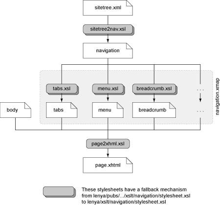
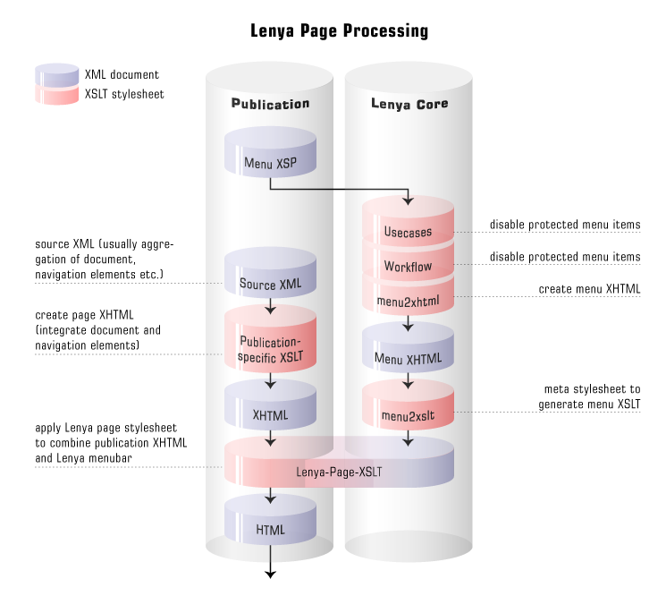

: Whole documentation
Documentation
Apache Lenya Documentation
In getting started with Lenya, one must learn not only a number of concepts, but a number of details as well. The Components section will explain the building blocks that make up Lenya, such as the sitemap, publications, and tasks.
You can find here release specific documentation. Although right now we have here the documentation mainly for 1.2.x.. This is our stable releases and should be used for productiv environments.
The 1.4. branch is in Draft status that means that it can be that are just RT (random thoughts) and not yet a documentation.
The version 2.0 docu is in brainstorming status that means we just collecting ideas.
More documentation (work in progress) can be found at the Apache Lenya Wiki.
1.2.x
Components
Access Control
Basic Terms
Role
Roles are the connection between access control and CMS functionality. On the access control side, you assign Roles to users, IP address ranges and groups at certain URL spaces. On the CMS side, you define which Roles are needed to execute certain usecases and workflow transitions. If the client has a certain Role, this means he is allowed to do something.
Each Role has a unique name. Role names can be arbitrary strings. Examples are
- author
- reviewer
- admin
Another common approach and useful is to use verbs as role names:
- edit
- review
- administrate
Identifiable
An Identifiable is a characteristic of the client that can be identified. Every Identifiable is Accreditable. Lenya currently supports the following Identifiables:
- users
- machines
- the world (this idenitifiable is assigned to every client that tries to access the system)
Identity
An Identity is the collection of all Identifiables that have access to the system in the current session. The Identity always contains the world and the machine that produced the request. If you logged in, the user is also contained in the Identity.
For instance, if you log in from the machine 192.168.0.16 as the user john, the Identity of the client contains
- the machine 192.168.0.16,
- the user john, and
- the world.
Accreditable
An Accreditable can be accredited with Roles in Policies. Lenya currently supports the following Accreditables:
- users
- machines (accredition not implemented, use IP ranges instead)
- IP address ranges
- the world
- groups
Credential
A Credential assigns a set of Roles to an Accreditable, e.g.:
-
news_editors: editor, reviewer
means "The group news_editors has the Roles editor and reviewer."
Policy
A Policy defines a set of Credentials for a certain URL. It has the responsibility to return all Roles of an Accreditable at a certain URL.
If for instance the Policy for the URL /tv/news contains the Credentials
- news_editors: editor, reviewer
- john: admin
- 192.168.0.72: visitor
and user john belongs to the group news_editors and has logged in from the machine 192.168.0.72, the Policy returns the Roles editor, reviewer, admin, visitor for the Accreditable john.
A Policy may not contain invalid Accreditables. E.g., if a user is deleted and another user with the same ID is created, he may not get the same privileges as the former one.
Access Controllers
Introduction
An AccessController has the responsibility to authenticate clients and to authorize requests.
Defining the Role in lenya.roles
<role name="org.apache.lenya.ac.AccessController"
shorthand="access-controller"
default-class="org.apache.lenya.ac.impl.BypassableAccessController"/>
Declaring an AccessController in cocoon.xconf
Each AccessController component needs a type that is attached to the role attribute, separated with a slash (/). This allows you to choose an AccessController in your publication in combination with the PublicationAccessControllerResolver. The following example shows the declaration of an AccessController with the type bypassable:
<component logger="lenya.ac.accesscontroller.bypassable"
class="org.apache.lenya.ac.impl.BypassableAccessController"
role="org.apache.lenya.ac.AccessController/bypassable">
...
</component>
Default Access Controller
The DefaultAccessController combines an Authenticator, a set of Authorizers, an AccreditableManager and a PolicyManager to perform these tasks.
<component logger="lenya.ac.accesscontroller.default"
class="org.apache.lenya.ac.impl.DefaultAccessController"
role="org.apache.lenya.ac.AccessController/default"/>
Bypassable Access Controller
The BypassableAccessController is a DefaultAccessController that can be bypassed for certain URL patterns. For URLs that match those patterns (regular expressions), access is granted for free.
The BypassableAccessController allows the definition of a regular expression for the public URL patterns:
<component logger="lenya.ac.accesscontroller.bypassable"
class="org.apache.lenya.ac.impl.BypassableAccessController"
role="org.apache.lenya.ac.AccessController/bypassable">
<public>.*[.]css|.*[.]jpg|.*[.]gif</public>
</component>
Customizing Access Control
How can I store my users in a database?
You have to implement a UserManager wich accesses the database to obtain the user information. Additionally, you have to implement an AccreditableManager which uses this UserManager. This AccreditableManager has to be declared in cocoon.xconf and assigned to your AccessController in lenya/pubs/mypub/config/ac/ac.xconf.
Access Controller Resolvers
Introduction
In Lenya, the AccessController is chosen dynamically, depending on the requested URL. An AccessControllerResolver resolves the appropriate AccessController for a URL.
Defining the Roles in lenya.roles
To obtain an AccessControllerResolver, the AccessControllerResolverSelector is used. A component which wants to obtain an AccessController asks the selector for the ComposableAccessControllerResolver. The ComposableAccessControllerResolver itself uses the selector to obtain its child AccessControllerResolvers.
<role name="org.apache.lenya.ac.AccessControllerResolverSelector"
shorthand="access-controller-resolvers"
default-class="org.apache.avalon.excalibur.component.ExcaliburComponentSelector">
<hint shorthand="configurable"
class="org.apache.lenya.ac.impl.ConfigurableAccessControllerResolver"/>
<hint shorthand="publication"
class="org.apache.lenya.cms.ac.PublicationAccessControllerResolver"/>
<hint shorthand="composable"
class="org.apache.lenya.ac.impl.ComposableAccessControllerResolver"/>
</role>
Declaring the Access Controller Resolvers in cocoon.xconf
<access-controller-resolvers>
<component-instance logger="lenya.ac.accesscontrollerresolver.publication"
class="org.apache.lenya.cms.ac.PublicationAccessControllerResolver"
name="publication">
</component-instance>
<component-instance logger="lenya.ac.accesscontrollerresolver.global"
class="org.apache.lenya.ac.impl.ConfigurableAccessControllerResolver"
name="global">
<access-controller type="global"/>
</component-instance>
<component-instance logger="lenya.ac.accesscontrollerresolver.composable"
class="org.apache.lenya.ac.impl.ComposableAccessControllerResolver"
name="composable">
<resolver type="publication"/>
<resolver type="global"/>
</component-instance>
</access-controller-resolvers>
Publication Access Controller Resolver
The PublicationAccessControllerResolver looks for a config/ac.xconf file inside the publication. If you want to use multiple AccessControllers within your Lenya installation, just declare them in the cocoon-xconf.xsl file and choose the type in the config/ac.xconf file. The type attribute selects an AccessController from the definitions in cocoon.xconf.
You have to configure the complete AccessController in this file. For instance, if you want to use a BypassableAccessController together with a certain set of components, you declare it as follows:
<?xml version="1.0"?>
<access-controller type="bypassable">
<accreditable-manager type="file">
<parameter name="directory"
value="context:///lenya/pubs/mypub/config/ac/passwd"/>
</accreditable-manager>
<policy-manager type="document">
<policy-manager type="file">
<parameter name="directory"
value="context:///lenya/pubs/mypub/config/ac/policies"/>
</policy-manager>
</policy-manager>
<authorizer type="policy"/>
<authorizer type="usecase">
<parameter name="configuration"
value="context:///lenya/pubs/default/config/ac/usecase-policies.xml"/>
</authorizer>
<authorizer type="workflow"/>
</access-controller>
Configurable Access Controller Resolver
The ConfigurableAccessControllerResolver can be configured with an AccessController directly inside cocoon.xconf:
<component-instance logger="lenya.ac.accesscontrollerresolver"
class="org.apache.lenya.ac.impl.ConfigurableAccessControllerResolver"
name="global">
<access-controller type="global"/>
</component-instance>
Composable Access Controller Resolver
The ComposableAccessControllerResolver is configured with a list of AccessControllerResolvers. Each one of these resolvers is invoked until one is successful. If no resolver finds an AccessController, the ComposableAccessControllerResolver returns null.
<component-instance logger="lenya.ac.accesscontrollerresolver"
class="org.apache.lenya.ac.impl.ComposableAccessControllerResolver"
name="composable">
<resolver type="publication"/>
<resolver type="global"/>
</component-instance>
Authenticators
Introduction
An authenticator is used to identify a client. It is supposed to setup the Identity object which is attached to the session.
Declaring the Roles in lenya.roles
<role name="org.apache.lenya.ac.Authenticator"
shorthand="authenticator"
default-class="org.apache.lenya.ac.impl.UserAuthenticator"/>
The UserAuthenticator
The UserAuthenticator uses the request parameters
- username and
- password
to authenticate or reject a user. It is configured in cocoon.xconf as follows:
<component logger="lenya.ac.authenticator"
class="org.apache.lenya.ac.impl.UserAuthenticator"
role="org.apache.lenya.ac.Authenticator"/>
When a valid username/password combination is entered, the previous user is removed from the session Identity object and the current user is added.
Authorizers
Introduction
An Authorizer checks if an Identity is authorized to invoke a certain request.
The DelegatingAuthorizerAction tries to resolve an AccessController for the URL. If an AccessController could be resolved, its authorize(Request) method is used to authorize the request. If no AccessController could be found, the access to the request is granted for free.
The DefaultAccessController delegates the authorization to its Authorizers. Only when all Authorizers return true, the request is authorized.
PolicyAuthorizer
A PolicyAuthorizer uses Policies for authorizing. It returns true, when the current Identity has at least one Role for the requested URL.
UsecaseAuthorizer
This Authorizer looks for the lenya.usecase request parameter and checks the usecase policy file for the Roles that are allowed to execute this usecase. The location of this file is defined using the configuration parameter which points to a URL:
<authorizer type="usecase">
<parameter name="configuration"
value="context:///lenya/pubs/mypub/config/ac/usecase-policies.xml"/>
</authorizer>
The usecase policy file might look as follows:
<?xml version="1.0"?>
<usecases xmlns="http://apache.org/cocoon/lenya/ac/1.0">
<usecase id="create">
<role id="editor"/>
</usecase>
<usecase id="rename">
<role id="editor"/>
</usecase>
</usecases>
WorkflowAuthorizer
The WorkflowAuthorizer is responsible for protecting workflow transitions. Therefore it
- looks for the lenya.event request parameter,
- determines the current state of the workflow instance, and
- checks if the event may be invoked by one of the current Roles in this state.
The WorkflowAuthorizer has no configuration options:
<authorizer type="workflow"/>
Policies and Policy Managers
Policies
A Policy assigns Roles to Accreditables.
There is a common policy definition XML schema which is handled by the PolicyBuilder. It can be used together with the FilePolicyManager and the SitemapPolicyManager.
Here is an example of a policy definition:
<policy xmlns="http://apache.org/cocoon/lenya/ac/1.0">
<user id="lenya">
<role id="editor"/>
<role id="reviewer"/>
</group>
<group id="reviewer">
<role id="reviewer"/>
</group>
<ip-range id="localhost">
<role id="editor"/>
</ip-range>
<world>
<role id="visitor"/>
</world>
</policy>
Policy Managers
A PolicyManager is used to resolve the policy for a certain URL. Lenya ships with the following PolicyManagers:
Inheriting Policy Manager
This is an abstract base class. It merges the policies of all steps in the URL. For each URL, a url policy and a subtree policy can be defined. The InheritingPolicyManager adds the credentials of
- the subtree policies for all parent directories of the requested page,
- the subtree policy of the requested page, and
- the url policy of the requested page.
For instance, if the URL is /lenya/news/index.html, the following policies are merged:
- subtree policy of /
- subtree policy of /lenya
- subtree policy of /lenya/news
- subtree policy of /lenya/news/index.html
- url policy of /lenya/news/index.html
File Policy Manager
The FilePolicyManager is an InheritingPolicyManager. The policies are defined by policy files that are arranged as a directory tree that reflects the URI space, e.g.:
/subtree-policy.acml /lenya/subtree-policy.acml /lenya/news/index.html/subtree-policy.acml /lenya/news/index.html/url-policy.acml
If a certain policy file does not exist (like /lenya/news in the above example), an empty policy is used instead.
The FilePolicyManager needs a directory parameter which contains a URL pointing to the policies directory:
<policy-manager type="file">
<parameter name="directory"
value="context:///lenya/pubs/mypub/config/ac/policies"/>
</policy-manager>
Document Policy Manager Wrapper
This InheritingPolicyManager subclass is used together with another InheritingPolicyManager. It is able to apply a single policy to all versions of a document (languages, print version, ...). E. g., if you define
- /foo/bar/subtree-policy.xml
and you use the DefaultDocumentBuilder, this policy is applied to the URLs
- /foo/bar.html
- /foo/bar_de.html
- /foo/bar_en.print.html
- ...
To configure the DefaultDocumentBuilder, just put the declaration of the wrapped PolicyManager inside the DefaultDocumentBuilder declaration:
<policy-manager type="document">
<policy-manager type="file">
<parameter name="directory"
value="context:///lenya/pubs/mypub/config/ac/policies"/>
</policy-manager>
</policy-manager>
Sitemap Policy Manager
The SitemapPolicyManager uses the policy sitemap to resolve the policy for a certain URL. For this purpose it sends a request of the form
cocoon://{publication-id}/policies{url}.acml
Example:
cocoon://mypub/policies/authoring/foo/bar_de.html.acml
which is processed by global-sitemap.xmap and forwarded to lenya/pubs/{publication-id}/policies-sitemap.xmap. The request is supposed to return a valid policy XML document.
The configuration of the SitemapPolicyManager is very simple:
<policy-manager type="sitemap"/>
Accreditable Managers
Introduction
An AccreditableManager combines a UserManager, a GroupManager, an IPRangeManager and a RoleManager.
UserManager
A UserManager manages users.
GroupManager
A GroupManager manages groups.
IPRangeManager
A IPRangeManager manages IP address rangess.
RoleManager
A RoleManager manages Roles.
SSL Encryption
Introduction
Pages or subtrees within Lenya can be protected by SSL Encryption. This allows you to protect these parts of your site that need it. Note that SSL Encryption is independent of Authorization. This means that you may have SSL-encrypted pages with or without access control.
In a typical setup, you would have Apache HTTPd handle the SSL encryption and forward requests to Tomcat as appropriate. This allows considerable flexibility with your setup, as you can make your SSL-encrypted pages appear at a different location than the rest of your content. The setup here will explain you how to achieve this.
Enabling SSL Encryption
To enable SSL Encryption for a subtree or a page, go to the AC Live or AC Authoring tabs in the Site area, and check the box that says SSL Encryption.
Deployment
Reverse Proxying Apache Lenya
Apache 2: Enabling
To enable mod_proxy for Apache 2:
./configure --prefix=/usr/local/httpd-2.0.48 --enable-proxy make make install /usr/local/httpd-2.0.48/bin/httpd -l
Apache 1: Enabling
To enable mod_proxy for Apache 1:
./configure --prefix=/usr/local/apache_1.3.27 --enable-module=proxy make make install /usr/local/apache_1.3.27/bin/httpd -l
Configuration
In order to run a Lenya site dynamically, add the following to your Apache httpd.conf file after making sure that you have the mod_proxy module installed:
<VirtualHost 192.168.1.13>
ServerName 192.168.1.13
ServerAdmin lenya@cocoon.apache.org
DocumentRoot /home/lenya/build/apache_1.3.24/htdocs
ProxyPass / http://192.168.1.13:8080/lenya/blog/live/
ProxyPassReverse / http://192.168.1.13:8080/lenya/blog/live/
ErrorLog logs/blog-error_log
CustomLog logs/blog-access_log common
</VirtualHost>
Related Links
http://wiki.apache.org/cocoon/ApacheModProxy
Editors
Forms Editor
XUpdate
The Forms Editor is using the XUpdate specification from the xmldb group to update elements and attributes. You can test-drive the XUpdate engine in Lenya by doing the following:
java -classpath lib/xmldb-common-2003-09-02.jar:lib/xmldb-xupdate-2003-09-02.jar:lib/log4j-1.2.8.jar:build/lenya/webapp/WEB-INF/lib/xercesImpl-2.4.0.jar:build/lenya/webapp/WEB-INF/lib/xalan-2.5.1.jar org.xmldb.xupdate.lexus.XUpdateQueryImpl xupdate.xml entry.xml
Customization
Customization of the Forms Editor is done with stylesheets. You need to have one stylesheet for each doctype. The stylesheet goes into lenya/xslt/formeditor/mydoctype.xsl. A simple stylesheet may look like
<?xml version="1.0" encoding="UTF-8"?>
<xsl:stylesheet version="1.0" xmlns:xsl="http://www.w3.org/1999/XSL/Transform">
<xsl:import href="../../../../../xslt/authoring/edit/form.xsl"/>
<xsl:template match="sidebar">
<xsl:apply-templates select="block"/>
<node name="Add Block">
<action><insert name="<xupdate:append select="/sidebar"><xupdate:element name="block"><title>New title</title><content>New content</content></xupdate:element></xupdate:append>"/></action>
</node>
</xsl:template>
<xsl:template match="block">
<node name="Add Block">
<action><insert name="<xupdate:insert-before select="/sidebar/block[@tagID='{@tagID}']"><xupdate:element name="block"><title>New title</title><content>New content</content></xupdate:element></xupdate:insert-before>"/></action>
</node>
<node name="Delete Block">
<action><delete name="<xupdate:remove select="/sidebar/block[@tagID='{@tagID}']"/>"/></action>
</node>
<node name="Title" select="/sidebar/block/title[@tagID='{title/@tagID}']">
<content type="plain"><input type="text" name="<xupdate:update select="/sidebar/block/title[@tagID='{title/@tagID}']">" size="40"><xsl:attribute name="value"><xsl:value-of select="title"/></xsl:attribute></input></content>
</node>
<node name="Content" select="/sidebar/block/content[@tagID='{content/@tagID}']">
<content type="mixed">
<textarea name="<xupdate:update select="/sidebar/block/content[@tagID='{content/@tagID}']">" cols="40" rows="3">
<xsl:copy-of select="content/node()"/>
</textarea>
</content>
</node>
</xsl:template>
</xsl:stylesheet>
Editing attributes
To add editing of attributes, you need to change the XPath and XUpdate statements to select the attribute:
<xsl:template match="xhtml:table">
<node name="Background Color" select="/*/xhtml:table[@tagID='{@tagID}']/@class">
<content>
<textarea name="<xupdate:update select="/*/xhtml:table[@tagID='{@tagID}']/@class">" cols="40" rows="2">
<xsl:value-of select="@class"/>
</textarea>
</content>
</node>
</xsl:template>
HTML One Form Editor
Integration
In order to make an XML document editable by the One Form Editor, one needs to add a menu item as follows:
<menus>
<menu name="File" label="File">
<block>
<item uc:usecase="1formedit" href="?lenya.step=open">Edit with one Form</item>
...
Note that the filesystem path is generated by the path mapper which is configured within pub-id/config/publication.xconf.
In order to get the redirect right after closing and saving the document, one might need to add a redirect-to entry to the publication specific sitemap.
Configuration
The One Form Editor can be configured within the generic Lenya usecase sitemap lenya/usecase.xmap.
Validation
Upon saving, the form content is validated against the appropriate Relax NG schema using the ValidateAction
Bitflux Editor
Configuration
Required and Optional parameters
- BX_xmlfile: Actual Content (XML)
- BX_xslfile (or BX_xhtmlfile): Global Formatting (XSLT (or XHTML))
- css: Content Formatting (CSS)
- BX_exitdestination: Link (HTML)
- BX_validationfile: Schema (RNG)
Namespace declaration
resources/misc/bxe/*-namespaces.xml
Kupu
Download
Information about Kupu development is available at the Kupu site.
Xopus
Demo
Try Xopus at:
http://www.xopus.com/demo/index.html
Configuration
Lenya needs to know the prefix of Xopus:
src/webapp/lenya/usecase.xmap src/webapp/lenya/resources/misc/xopus/index.html
Saving via POST
To enable saving via POST, one needs to modify $XOPUS/xopusPlugins/datadriver.js as follows
// Save data START
alert('Save XML via POST');
var result = Application.sendXML(doc, 'POST', name);
switch (result.status)
{
case 200:
//OK
var resultXML = result.responseXML;
alert('XML saved');
return;
case -1:
alert('Error while saving ' + name + ':\n\n' + result.responseText);
break;
default:
alert('Server responded not ok while saving ' + name + ':\n\nstatus:' + result.status + '\nmessage: ' + resul
t.responseText);
}
// Save data END
whereas the text of the alerts might be replaced by something else.
Exit Xopus
To exit Xopus one needs to modify $XOPUS/xopusPlugins/cmsdriver.js as follows
getExitURL: function(path)
{
exitURL = path.substring(0, path.indexOf('?'));
alert('Exit to: ' + exitURL);
return exitURL;
},
whereas the text of the alert might be replaced by something else.
Making a page editable with Xopus: Schemas, Views (XSLT) and Menus
Xopus needs an XML Schema for validation and an XSLT to view the document. The Schemas and XSLTs need to be located at:
$PUBLICATION/config/doctypes/schemas/$DOCTYPE.xsd $PUBLICATION/lenya/xslt/xopus/$DOCTYPE.xsl
whereas one might want to use Trang to generate XML Schemas.
Editing with Xopus is implemented as a usecase. One can add a menu item as follows:
<item uc:usecase="xopus" href="?lenya.step=open&doctype=$DOCTYPE">Edit with Xopus</item>
Layout
The Navigation Framework
Introduction
To goal of the navigation framework is to
- simplify and standardize the generation of navigation widgets like menubars, tabs, breadcrumb paths.
With the approach that is presented here it shall be possible to
- use pre-defined XHTML navigation components and present them with a custom CSS,
- override these components in a publication whereby the logic can be reused, and
- create and integrate new publication-specific navigation components using the same scheme.
Architecture
The navigation framework consists of the following components:
- /lenya/navigation.xmap
- The sitemap where the navigation components are loaded.
- /lenya/xslt/navigation/*.xsl
- The default navigation components that are shipped with Lenya.
- /lenya/pubs/lenya/xslt/navigation/*.xsl
- Custom navigation components of the publication.
Using the Navigation Framework
Loading a Navigation Component
You can load a navigation component from the following URI:
cocoon://navigation/<pub-id>/<component>/<path>.xml
The URI steps are:
- <pub-id>
- The publicaton ID.
- <component>
- The navigation component to load (tabs, menu, etc.).
- <path>
- The navigation path. It is a concatenation of the href attributes of the sitetree nodes that lead to the current node, e.g. demo/oscom.html for the sitetree fragment
<site xmlns="http://apache.org/cocoon/lenya/sitetree/1.0">
<node href="demo/" label="Demo">
<node href="oscom.html" label="OSCOM"/>
...
</node>
...
</site>
Aggregating the Navigation Components
The basic principle is shown in the following figure:

In the publication sitemap (lenya/pubs/<pub-id>/sitemap.xmap) the navigation components are aggregated. Here you decide which components you want to use:
<map:pipeline>
<map:match pattern="navigation/**.html">
(1) <map:aggregate element="page" prefix="page"
ns="http://apache.org/cocoon/lenya/cms-page/1.0">
(2) <map:part src="cocoon://navigation/
{publication-id}/breadcrumb/{../1}.html.xml"/>
(3) <map:part src="cocoon://navigation/
{publication-id}/tabs/{../1}.html.xml"/>
(4) <map:part src="cocoon://navigation/
{publication-id}/menu/{../1}.html.xml"/>
</map:aggregate>
(5) <map:transform src="xslt/page2xhtml.xsl">
(6) <map:parameter name="root"
value="{context}/{publication-id}/"/>
</map:transform>
(7) <map:serialize type="xhtml"/>
</map:match>
</map:pipeline>
- The navigation elements are aggregated together with other document parts.
- Load the breadcrumb XHTML fragment.
- Load the tabs XHTML fragment.
- Load the menu XHTML fragment.
- Create the XHTML page.
- The stylesheet can use this parameter to generate absolute URLs.
- Finally, serialize the page as XHTML.
Developing Navigation Components
The following contracts define the development of navigation components:
- A navigation component is an XSLT stylesheet that is located at
- lenya/xslt/navigation/<component>.xsl
- for default components and
- lenya/pubs/<publication-id>/lenya/xslt/<component>.xsl
- for default components.
- The default components produce an XHTML fragment with the top level element <div class="<component>"/>.
XHTML templating
The XHTML Templating Concept
There are various approaches to templating within a Lenya publication. The XHTML approach is effective under the following conditions:
- Designers want to edit the layout with their conventional tools.
- The page layout contains large parts of static HTML.
- Pages are typically composed of simple elements.
If these conditions are met, it is possible to define the overall layout of a page in a XHTML document, using tools like Dreamweaver. Special placeholders need to be inserted to indicate where Lenya elements should later be substituted. This can be done by inserting <div id="navigation" /> as the placeholder for the navigation, for instance, or <div id="cmsbody" /> for the body part of a page.
If these XHTML documents are finished, they can then be called from Lenya, and the placeholders be substituted with CMS content. Schematically, this process looks as follows:
1)
XML document (article) ->
XML document (navigation) -> Aggregation to one XML document
XHTML template ->
2)
aggregated XML document -> Processing with XSLT
Step 2) identifies the various placeholders ( <div id="navigation" /> and <div id="cmsbody" /> in this example) and applies XSL transformations to substitute the placeholders with the transformed contents of (navigation, article) respectively.
What are the advantages of this approach?
- less XSLT is required, making it easier to delegate design work
- XSLT are easier to understand, as they only affect a small part of a page
What are the pitfalls of this approach?
- it may not be appropriate to put the content (here: article) into the XHTML format
- template reuse may be hampered
Serving Static Resources
Serving Static Resources
Lenya now serves static resources out of the box. Publications can either use these predefined mappings, or provide their own. The following MIME types are handled:
- CSS
- Javascript
- Images (GIF, JPEG and PNG)
- Shockwave Flash (*.swf)
To use the built-in matching, these resources need to be stored in the appropriate directories within a publication, and called with the proper URLs.
| MIME Type | Prefix | Directory |
| CSS | css/ | resources/css/ |
| Javascript | javascript/ | resources/javascript/ |
| Images | images/ | resources/images/ |
| pdf/ | resources/pdf/ | |
| Flash | flash/ | resources/flash/ |
An image would thus be called with <img src="images/logo.gif" /> You dont have to worry about absolute vs relative image paths as long as you use URLs that follow this pattern.
The Lenya Menubar
Defining the Menubar
The XML Structure
A menubar declaration contains the definition of several menus. Each menu consists of a set of blocks containing items. The structure of a menu declaration looks as follows:
<menu xmlns="http://apache.org/cocoon/lenya/menubar/1.0">
<menus>
<menu label="File" name="File">
<block>
<item href="...">New Document</item>
<item href="...">New Language Version</item>
...
</block>
...
</menu>
...
</menus>
</menu>
Showing Blocks and Items Only in Certain Tabs
When you use the same menu declaration for different tabs, it might be wished that a menu item shouldn't appear in all these tabs. For instance, the Edit menu item should be displayed only in the authoring tab menu.
To disable a menu item or block, you add an attribute with the name of the tab (authoring, info) and the value false:
<item info="false">...</item> <block authoring="false"> ... </block>
Specifying Usecases and Workflow Events
When a menu item calls a usecase or triggers a workflow transition, and the corresponding action is not allowed, the href attribute of the item is removed before the menu is rendered to disable the item. For this purpose, the <item> element supports the attributes
- wf:event,
- uc:usecase, and
- uc:step.
If the attributes are provided, they are translated into the appropriate request parameters:
- wf:event -> lenya.event
- uc:usecase -> lenya.usecase
- uc:step -> lenya.step
The attributes are used in the following way:
<menu
xmlns="http://apache.org/cocoon/lenya/menubar/1.0"
xmlns:uc="http://apache.org/cocoon/lenya/usecase/1.0"
xmlns:wf="http://apache.org/cocoon/lenya/workflow/1.0">
...
<item wf:event="edit"
uc:usecase="edit-forms"
uc:step="open" href="?...">Edit with Forms</item>
...
</menu>
The resulting request would be
?lenya.event=edit&lenya.usecase=edit-forms&lenya.step=open&...
If a user is not allowed to invoke the event edit or to execute the usecase edit-forms, the menu item will be disabled.
Applying the Menubar - Meta Stylesheet Approach
In this approach, the publication simply builds its XHTML page without any additional XML. The Lenya menubar is added using a meta stylesheet in the last transformation step. You find more information on meta stylesheets on the page MetaStylesheets in the cocoondev wiki.
The Big Picture (literally)

In the left column you see the XML flow within the publication sitemaps, the right column shows the flow within the core sitemaps.
Creating the Menu XHTML
- The actual menu XML is fetched from the sitemap menus.xmap within the publication directory.
- The XML is processed using the UsecaseMenuTransformer and the WorkflowMenuTransformer.
- The stylesheet lenya/xslt/menu/menu2xhtml.xsl transforms the menu XML into XHTML.
- Finally, this XHTML is transformed into a meta stylesheet by lenya/xslt/menu/menu2xslt.xsl.
Requesting and Applying the Menubar
- The XHTML page is generated without any additional XML.
- Afterwards, the menubar meta stylesheet is requested using a cocoon://lenya-page/... internal request.
- This request is matched in global-sitemap.xmap.
- The menubar meta stylesheet is applied to the XHTML page. It inserts the menubar at the top of the HTML body, adds some additional CSS file entries and modifies the HTML title.
Configuring the Publication
Requesting the lenya-page Meta Stylesheet
The lenya-page meta stylesheet request looks as follows:
<map:generate src="cocoon:/page/..."/>
<map:transform src="cocoon://lenya-page/{page-envelope:publication-id}/[menu-url]"/>
<map:serialize type="html"/>
- The lenya-page part is used to match the request in global-sitemap.xmap.
- The {page-envelope:publication-id} part is used to evaluate which publication the request came from.
- The [menu-url] part is used to get the menu from menus.xmap. Here you have to add all information you need to select the appropriate menubar.
Creating the Menu XML
Usually, this is done using an XSP page.
The Lenya menubar namespace is
http://apache.org/cocoon/lenya/menubar/1.0
Supplying Menus in menus.xmap
When the lenya-page meta stylesheet is generated in the core, the actual menu XML is fetched using a request to the sitemap menus.xmap in the publication directory. The [menu-url] part from the lenya-page request is matched in this sitemap.
This simple menus.xmap pipeline uses different menus for authoring and live:
<map:pipeline>
<map:match pattern="live/**">
<map:generate type="serverpages"
src="../../content/menus/live.xsp"/>
<map:serialize type="xml"/>
</map:match>
<map:match pattern="*/**">
<map:generate type="serverpages"
src="config/menus/generic.xsp"/>
<map:serialize type="xml"/>
</map:match>
</map:pipeline>
You can as well use the document type or the current URL to select a menu.
Examples for lenya-page requests:
Using the area:
cocoon://lenya-page/{page-envelope:publication-id}/{page-envelope:area}
Using the document type:
cocoon://lenya-page/{page-envelope:publication-id}/{page-envelope:document-type}
Using the document URL:
cocoon://lenya-page/{page-envelope:publication-id}/{page-envelope:document-url}
Creating a Customized Menu
It is also possible to get the menu XML before it is transformed to XHTML using a request to the core. For this purpose, the prefix menu-xml is used instead of lenya-page. This way, you can aggregate the menu XML together with other page parts and include it somewhere inside the XML page.
<map:aggregate element="lenya" label="aggregation">
<map:part src="cocoon:/lenyabody/{1}/{2}.xml"/>
<map:part src="cocoon://menu-xml/{page-envelope:publication-id}/{1}.xml"/>
</map:aggregate>
Applying the Menubar - Classic Approach
XSLT
By editing src/webapp/lenya/xslt/menu/menu.xsl one can change the look and feel of the Lenya menu bar. This XSLT template is being included by src/webapp/lenya/xslt/menu/root.xsl.
Publication
The PageEnvelopeModule
Overview
The PageEnvelopeModule is an InputModule that provides access to the PageEnvelope parameters. For documentation on input modules see section Modules of the Cocoon documentation.
Module Parameters
- publication-id
- The current publication ID.
- context-prefix
- The context prefix of the web application, e.g. /lenya.
- area
- The CMS area, authoring or live.
- publication
- The current publication
- document-id
- The document ID, i.e. the path of the document in the sitetree.
- document-name
- The document name, i.e. the very last part of the document ID.
- document-url
- The URL of the document within the area, e.g., /news/index.html
- document-path
- The file path where this document is physically located in the file system.
- document-language
- The language of this document.
- document-type
- The document type.
Sitemap usage
<map:parameter name="document-id" value="{page-envelope:document-id}"/>
XSP usage
<xsp:page
language="java"
xmlns:xsp="http://apache.org/xsp"
xmlns:input="http://apache.org/cocoon/xsp/input/1.0">
<usecase:url>
<input:get-attribute
module="page-envelope" as="string" name="document-url"/>
</usecase:url>
</xsp:page>
Site Tree
Motivation
Currently there is no standard way to manage the navigation in Lenya. Previous attempts have shown their own merits and drawbacks. A general and standard approach is needed.
Rationale
The basic problems we're trying to solve are as follows:
- Maintain the navigation in an easy format independent of the actual storage of the documents.
- Enable moving of documents.
- Enable querying of doctype independent of request URI.
Navigation
There are a couple of known implementations to choose from:
- The existing Lenya tree.xml
- The Forrest site.xml.
- The hashmap way: A sitetree.xml and purlspace.xml combination where the purlspace.xml contains all existing documents and sitetree.xml contains the navigation hierarchy.
Moving Of Documents
The Forrest site.xml solves this quite elegantly: Due to the use of XPath and some ambiguity the documents can be found almost independent of their actual location
With the existing Lenya or the hashmap solution changing of document location requires editing of the tree.xml or the purlspace.xml respectively.
Doctype Querying
For question 3 there are a couple of known approaches:
Hashmap
This method uses an action which contains for each request URI a mapping to attributes such as doctype, srcfile, xslt, etc.
Forrest SourceTypeAction
Forrest contains an action which for a given request opens the source file and determines its doctype based on the dtd declaration.
URIParametrizer
The URIParametrizer is a black box (probably an action) which internally issues cocoon requests to different sitemaps which return different attributes (doctype, etc.) for a given request URI.
This amounts to a combination of the hashmap solution with the basic cocoon concepts: The request URIs aren't matched against a hashmap but are handled by a sitemap instead. The sitemap contains normal pipelines and matchers which match on the request. As a catch-all there is still the possibility of using a hashmap for URIs that didn't match any pipelines.
Finally a new (internal) request is generated using the parameter values. This request is handled by a normal cocoon sitemap as if the original request had contained these parameters.

The Sitetree Schema
The proposed sitetree schema looks as follows:
<?xml version="1.0"?>
<xs:schema
xmlns:xs="http://www.w3.org/2001/XMLSchema"
targetNamespace="http://apache.org/cocoon/lenya/sitetree/1.0"
xmlns="http://apache.org/cocoon/lenya/sitetree/1.0"
elementFormDefault="qualified">
<xs:element name="site">
<xs:complexType>
<xs:sequence>
<xs:element ref="node"
minOccurs="0" maxOccurs="unbounded"/>
</xs:sequence>
</xs:complexType>
</xs:element>
<xs:element name="node">
<xs:complexType>
<xs:sequence>
<xs:element ref="node"
minOccurs="0" maxOccurs="unbounded"/>
</xs:sequence>
<xs:attribute name="href" type="xs:string"/>
<xs:attribute name="label" type="xs:string"/>
</xs:complexType>
</xs:element>
</xs:schema>
An example sitetree.xml could look like follows:
<site
xmlns="http://apache.org/cocoon/lenya/sitetree/1.0"
xmlns:xsi="http://www.w3.org/2001/XMLSchema-instance"
xsi:schemaLocation=
"http://apache.org/cocoon/lenya/sitetree/1.0
../../../../resources/entities/sitetree.xsd">
<node href="index.html" label="Home"/>
<node href="demo/" label="Demo">
<node href="unipublic.html" label="Unipublic"/>
<node href="news.html" label="Wyona News and Comments"/>
<node href="oscom.html" label="OSCOM"/>
</node>
<node href="download/" label="Download">
<node href="source.html" label="Source Version"/>
<node href="binary.html" label="Binary Version"/>
</node>
<node href="documentation/" label="Documentation"/>
</site>
Backwards Compatibility
There has not been a previous implementation, so this is a non-issue.
Roadmap
- Decide which solution to choose
Reference Implementation
None
Revision Control
Revision Controller
Introduction
The Revision Controller controls the different reserved check-in and check-out of documents, the backup versions and the rollback. It is filesystem oriented
Check-in / Check-out
The check-in and check-out are reserved: a checked out document cannot be checked out by another user.
A user "System" exists, who can force internally a checkin
The different check-in/check-out states (the checkin/out, the time, the user's identity) of a document are stored in an xml file with a own markup language: the RCML-file.
Versions
When a document is checked in, the old version of the document is copied ( backup )
Rollback
It is also possible to retrieve an old version with the rollback
Package
org.apache.lenya.cms.rc
Revision Controller Markup Language (RCML)
Location
The RCML-file are located in a rcml directory
{publication}/content/rcml/
which can be configured in
cocoon-lenya/src/webapp/lenya/config/rc/revision-controller.xconf
For a document with an xml file {publication}/content/authoring/{filename}, the rcml file is
{publication}/{rcml-directory}/content/authoring/{filename}.rcml
Markup Language
A rcml-file is typically
<?xml version="1.0" encoding="utf-8"?>
<XPSRevisionControl>
<CheckIn><Identity>lenya</Identity><Time>1023102128815</Time></CheckIn>
<CheckOut><Identity>lenya</Identity><Time>1023102128780</Time></CheckOut>
<CheckIn><Identity>lenya</Identity><Time>1023102125300</Time></CheckIn>
<CheckOut><Identity>lenya</Identity><Time>1023102121346</Time></CheckOut>
<CheckIn><Identity>roger</Identity><Time>1023102110381</Time></CheckIn>
<CheckOut><Identity>roger</Identity><Time>1023102110349</Time></CheckOut>
<CheckIn><Identity>lenya</Identity><Time>1023102073728</Time></CheckIn>
<CheckOut><Identity>lenya</Identity><Time>1023102012990</Time></CheckOut>
<CheckOut><Identity>lenya</Identity><Time>1023102010354</Time></CheckOut>
<CheckIn><Identity>System</Identity><Time>1022569908000</Time></CheckIn>
</XPSRevisionControl>
Size
The size of the rcml file is limited to the value (2 * maximalNumberOfEntries) + 1, where maximalNumberOfEntries is in org.apache.lenya.cms.rc.RCML hard coded (value 10)
Reserved Checkin
Revision Controller
To check in a file call:
org.apache.lenya.cms.rc.RevisionController.reservedCheckIn(
String destination, String identity, boolean backup)
where the destination is the path of the file from the publication, the identity is the identity of the user and backup is a boolean.
This method is called from the ReservedCheckinAction.
Rem: if no backup (and no rollback is needed) set in the ReservedCheckinAction the backup boolean to false.
The ReservedCheckinAction
To invoke a reserved check-in from a sitemap pipeline, you use The ReservedCheckinAction.
<map:components>
...
<map:actions>
<map:action name="reserved-checkin"
src="org.apache.lenya.cms.cocoon.acting.ReservedCheckinAction"
logger="sitemap.action.reserved-checkin"/>
</map:actions>
...
</map:components>
<map:act type="reserved-checkin">
<map:generate src="../../content/rc/{exception}.xsp"
type="serverpages">
<map:parameter name="user" value="{user}"/>
<map:parameter name="filename" value="{filename}"/>
<map:parameter name="checkType" value="{checkType}"/>
<map:parameter name="date" value="{date}"/>
</map:generate>
<map:transform src="xslt/rc/rco-exception.xsl"/>
<map:serialize/>
</map:act>
URL
The call
{document-URL}?lenya.usecase=checkin&lenya.step=checkin
invokes a check-in of the document
fileReservedCheckInException
When the file cannot be checked in because another user has already checked it out, a fileReservedCheckInException is thrown:
File Reserved Checkin Exception
File not checked in yet
The resource has already been checked out:
User: roger
Date: Wed Oct 22 14:31:05 CEST 2003
Filename: /content/authoring/index/index_de.xml
The serverpage
cocoon-lenya/src/webapp/lenya/content/rc/fileReservedCheckInException.xsp
generates the xml which will be transformed with
cocoon-lenya/src/webapp/lenya/xslt/rc/rco-exception.xsl
Exception
The errors are catched as generic Exception
Generic Exception
Check the log files :-)
Filename: /content/authoring/malaVida/index_de.xml
The serverpage
cocoon-lenya/src/webapp/lenya/content/rc/exception.xsp
generates the xml which will be transformed with
cocoon-lenya/src/webapp/lenya/xslt/rc/rco-exception.xsl
Reserved Checkout
Revision Controller
To check out a file call the method :
org.apache.lenya.cms.rc.RevisionController.reservedCheckOut(String source, String identity)
where the source is the path of the file from the publication and the identity is the identity of the user.
This method is called from the ReservedCheckoutAction.
The ReservedCheckoutAction
To invoke a reserved check out from a sitemap pipeline, you use The ReservedCheckoutAction.
<map:components>
...
<map:actions>
<map:action name="reserved-checkout" src="org.apache.lenya.cms.cocoon.acting.ReservedCheckoutAction" logger="sitemap.action.reserved-checkout"/>
</map:actions>
...
</map:components>
<map:act type="reserved-checkout">
<map:generate src="content/rc/{exception}.xsp" type="serverpages">
<map:parameter name="user" value="{user}"/>
<map:parameter name="filename" value="{filename}"/>
<map:parameter name="date" value="{date}"/>
</map:generate>
<map:transform src="xslt/rc/rco-exception.xsl"/>
<map:serialize/>
</map:act>
URL
The call
{document-URL}?lenya.usecase=checkout&lenya usecase.step=checkout
invokes a check-out of the document
The ReservedCheckoutTestAction
The ReservedCheckoutTestAction checks out a document only if this isn't already checked out
<map:components>
...
<map:actions>
<map:action name="reserved-checkout-test" src="org.apache.lenya.cms.cocoon.acting.ReservedCheckoutTestAction" logger="sitemap.action.reserved-checkout-test"/>
</map:actions>
...
</map:components>
<map:act type="reserved-checkout-test">
<map:generate type="serverpages" src="../../content/rc/{exception}.xsp">
<map:parameter name="user" value="{user}"/>
<map:parameter name="filename" value="{filename}"/>
<map:parameter name="date" value="{date}"/>
</map:generate>
<map:transform src="../../xslt/rc/rco-exception.xsl"/>
<map:serialize/>
</map:act>
FileReservedCheckOutException
When the file cannot be checked out because another user has already checked it out, a fileReservedCheckOutException is thrown:
File Reserved Checkout Exception
Could not check out the file
Reason : The resource has already been checked out by another user
User: lenya
Date: Wed Oct 22 12:02:28 CEST 2003
Filename: /content/authoring/index/index_de.xml
The serverpage
cocoon-lenya/src/webapp/lenya/content/rc/fileReservedCheckOutException.xsp
generates the xml which will be transformed with
cocoon-lenya/src/webapp/lenya/xslt/rc/rco-exception.xsl
Exception
The errors are catched as generic Exception
Generic Exception
Check the log files :-)
Filename: /content/authoring/malaVida/index_de.xml
The serverpage
cocoon-lenya/src/webapp/lenya/content/rc/exception.xsp
generates the xml which will be transformed with
cocoon-lenya/src/webapp/lenya/xslt/rc/rco-exception.xsl
Revision
Location
The backup files are located in a rcback directory
{publication}/content/rcbak/
which can be configured in
cocoon-lenya/src/webapp/lenya/config/rc/revision-controller.xconf
For a document with an xml file {publication}/content/authoring/{filename}, the backup files are
{publication}/{rcback-directory}/content/authoring/{filename}.timestamp
Revision Screen
To get the revision screen, use the serverpage
cocoon-lenya/src/webapp/lenya/content/rc/versions-screen.xsp
Sitemap :
<map:generate src="content/rc/versions-screen.xsp" type="serverpages"/>
<map:transform src="xslt/rc/rollback.xsl"/>
<map:serialize/>
View of an old version
To get the view of a backup version, use the serverpage
cocoon-lenya/src/webapp/lenya/content/rc/view.xsp
It needs the check-in time as request parameter
Sitemap in the publication :
<map:generate type="serverpages" src="../../content/rc/view.xsp">
</map:generate>
<map:transform src="xslt/toDoc.xsl"/>
<map:transform src="xslt/{../2}2xhtml.xsl"/>
<map:serialize type="xml"/>
URL
The call of the URL
{document-URL}?lenya.usecase=rollback&lenya usecase.step=view&rollbackTime={time-point}
shows the version corresponding to the time {time-point}
Disable the backup
To disable the backup set in the ReservedCheckinAction the backup boolean of getRC().reservedCheckIn(String destination, String identity, boolean backup) to false.
Rollback
Revision Controller
To rollback a file call
org.apache.lenya.cms.rc.RevisionController.rollback(String destination, String identity, boolean backupFlag, long time)
where destination is the path of the file from the publication,identity is the identity of the user, backupFlag is a boolean to choose if you want a backup of the current version, and time is the time of the version to roll back to.
The RollbackAction
To invoke a rollback from a sitemap pipeline, you use The RollbackAction.
The check-in time is needed as request parameter
<map:components>
...
<map:actions>
<map:action name="rollback" src="org.apache.lenya.cms.cocoon.acting.RollbackAction"/>
</map:actions>
...
</map:components>
<map:act type="rollback">
<map:redirect-to session="true" uri="{location}"/>
</map:act>
URL
The call of the URL
{document-URL}?lenya.usecase=rollback&lenya usecase.step=rollback&rollbackTime={time-point}
invokes the rollbak to the version corresponding to the time {time-point}
Repository
WebDAV Servers
Apache 1
Download the Apache Web Server and WebDAV module source code from the Apache website, e.g. apache_1.3.24.tar.gz and mod_dav-1.0.3-1.3.6.tar.gz. Configure and compile mod_dav:
wget http://www.webdav.org/mod_dav/mod_dav-1.0.3-1.3.6.tar.gz cd /usr/local/src/mod_dav-1.0.3-1.3.6 ./configure --with-apache=/usr/local/src/apache_1.3.24 make make install cd /usr/local/src/apache_1.3.24 find . -name "*dav*" -print ./configure --prefix=/usr/local/apache --activate-module=src/modules/dav/libdav.a (./configure --prefix=/usr/local/apache --enable-module=proxy --activate-module=src/modules/dav/libdav.a) make su make install /usr/local/apache/bin/httpd -l
You need to reconfigure httpd.conf, e.g.:
DAVLockDB /usr/local/apache/logs/DavLock <Directory "/usr/local/build/apache/htdocs"> Dav On
To see the files open "Konqueror" and type webdav://127.0.0.1:8080.
More info on mod_dav can be found at
Apache 2
Download the Apache Web Server source code from the Apache website, e.g. httpd-2.0.46.tar.gz. The mod_dav module is inlcuded with the Apache 2 distribution. Configure and compile Apache:
./configure --prefix=/usr/local/apache2 --with-dav --enable-dav make make install /usr/local/apache2/bin/httpd -l | grep dav
You need to reconfigure Apache:
DAVLockDB /usr/local/apache2/logs/DavLock <Directory "/usr/local/apache2/htdocs"> Dav On </Directory>
More info on mod_dav can be found at
- http://apacheworld.org/ty24/site.chapter13.html
- http://httpd.apache.org/docs-2.0/mod/mod_dav.html
- Apache and DAV
Tomcat
Point your WebDAV client to http://127.0.0.1:8080/webdav/. The webdav context is DAV enabled, but has been set up in read-only mode for safety reasons. It can be put in read-write mode by editing the web application descriptor file /webapps/webdav/WEB-INF/web.xml.
<!-- Uncomment this to enable read and write access --> <init-param> <param-name>readonly</param-name> <param-value>false</param-value> </init-param>
Apache Jakarta Slide
Point your WebDAV client to http://127.0.0.1:8080/slide/. One needs to configure Domain.xml
<contentstore classname="slidestore.reference.FileContentStore"> <parameter name="rootpath">/usr/local/jakarta-tomcat-4.1.21-LE-jdk14/webapps/lenya/lenya/pubs/notimes/content/authoring/articles</parameter> ...
Monitoring the WebDAV exchange
cd /usr/local/axis-1_1RC2 java -cp lib/axis.jar org.apache.axis.utils.tcpmon Enter "Listen Port# 3333" for instance Select "Act as a... Listener" Enter "Target Hostname 195.226.6.70" for instance Enter "Target Port# 8080" for instance Click "Add" and a new tab saying "3333" should show up Click on this new tab to view the requests and responses Enter within your browser "http://127.0.0.1:3333/lenya/index.html"
PROPFIND
The WebDAV client will first send a PROPFIND with Depth = 0. Depending on the response (collection or resource) the WebDAV client will send another PROPFIND with Depth = 1 (collection) or a GET (resource).
Collection:
Request ======= PROPFIND /lenya/blog/authoring/entries/2003/08/24/peanuts/ HTTP/1.1 Pragma: no-cache Cache-control: no-cache Accept: text/*, image/jpeg, image/png, image/*, */* Accept-Encoding: x-gzip, gzip, identity Accept-Charset: iso-8859-1, utf-8;q=0.5, *;q=0.5 Accept-Language: en Host: 127.0.0.1 Depth: 0 Response ======== HTTP/1.1 207 Multi-Status X-Cocoon-Version: 2.1 Set-Cookie: JSESSIONID=320E3B1395B867B5BC42B5FC93457C36; Path=/lenya Content-Type: text/xml Transfer-Encoding: chunked Date: Mon, 25 Aug 2003 14:27:12 GMT Server: Apache Coyote/1.0 <?xml version="1.0" encoding="UTF-8"?> <D:multistatus xmlns:D="DAV:"> <D:response xmlns:lp1="DAV:" xmlns:lp2="http://apache.org/dav/props/"> <D:href>/lenya/blog/authoring/entries/2003/08/24/peanuts/</D:href> <D:propstat> <D:prop> <lp1:resourcetype><D:collection/></lp1:resourcetype> <D:getcontenttype>httpd/unix-directory</D:getcontenttype> </D:prop> <D:status>HTTP/1.1 200 OK</D:status> </D:propstat> </D:response> </D:multistatus> Request ======= PROPFIND /lenya/blog/authoring/entries/2003/08/24/peanuts/ HTTP/1.1 Pragma: no-cache Cache-control: no-cache Accept: text/*, image/jpeg, image/png, image/*, */* Accept-Encoding: x-gzip, gzip, identity Accept-Charset: iso-8859-1, utf-8;q=0.5, *;q=0.5 Accept-Language: en Host: 127.0.0.1 Depth: 1 Response ======== HTTP/1.1 207 Multi-Status X-Cocoon-Version: 2.1 Set-Cookie: JSESSIONID=5A87A774B7B29D04DEDBDECC54477E5B; Path=/lenya Content-Type: text/xml Transfer-Encoding: chunked Date: Mon, 25 Aug 2003 14:27:12 GMT Server: Apache Coyote/1.0 <?xml version="1.0" encoding="UTF-8"?> <D:multistatus xmlns:D="DAV:"> <D:response xmlns:lp1="DAV:" xmlns:lp2="http://apache.org/dav/props/"> <D:href>/lenya/blog/webdav/entries/2003/08/24/peanuts/index.html</D:href> <D:propstat> <D:prop> <lp1:resourcetype/> <D:getcontenttype>text/html</D:getcontenttype> </D:prop> <D:status>HTTP/1.1 200 OK</D:status> </D:propstat> </D:response> <D:response xmlns:lp1="DAV:" xmlns:lp2="http://apache.org/dav/props/"> <D:href>/lenya/blog/webdav/entries/2003/08/24/peanuts/charlie.xml</D:href> <D:propstat> <D:prop> <lp1:resourcetype/> <lp1:creationdate>2003-07-21T13:04:23Z</lp1:creationdate> <lp1:getcontentlength>3845</lp1:getcontentlength> <D:getcontenttype>text/xml</D:getcontenttype> </D:prop> <D:status>HTTP/1.1 200 OK</D:status> </D:propstat> </D:response> </D:multistatus>
PUT
The WebDAV client will send a PUT in order to copy a document onto the server.
Request
=======
PUT /lenya/blog/webdav/entries/2003/08/29/levi/index.xml HTTP/1.1
Host: 127.0.0.1
User-Agent: Mozilla/5.0 (X11; U; Linux i686; en-US; rv:1.4b) Gecko/20030507
Accept: text/xml,application/xml,application/xhtml+xml,text/html;q=0.9,text/plain;q=0.8,video/x-mng,image/png,image/jpeg,image/gif;q=0.2,*/*;q=0.1
Accept-Language: en-us,en;q=0.5
Accept-Encoding: gzip,deflate
Accept-Charset: ISO-8859-1,utf-8;q=0.7,*;q=0.7
Keep-Alive: 300
Connection: keep-alive
Content-Type: text/xml
Content-Length: 1641
Cookie: JSESSIONID=1CF7F4C27B737E3603FFC2D4D4C137CE
<?xml version="1.0" encoding="UTF-8"?>
<echo:entry xmlns:echo="http://example.com/newformat#" xmlns:ent="http://www.purl.org/NET/ENT/1.0/" version="1.0">
<echo:title>Lenya</echo:title>
<echo:created>2003-08-29T01:46:45</echo:created>
<echo:issued>2003-08-29T01:46:45</echo:issued>
<echo:modified>2003-08-29T01:46:45</echo:modified>
<echo:content mode="escaped" type="text/plain" lang="en-us">
Plain Text
</echo:content>
<ent:topic id="introductory">Hello</ent:topic>
</echo:entry>
Response
========
HTTP/1.1 204 No Content
Date: Mon, 18 Aug 2003 14:22:47 GMT
Server: Apache/2.0.46 (Unix) DAV/2
Content-Length: 0
Keep-Alive: timeout=15, max=100
Connection: Keep-Alive
Content-Type: text/xml
Search
Lucene
Generic Search
URL:
/lenya/$PUB_ID/search-$AREA/lucene
Indices and Excerpts:
src/webapp/lenya/pubs/$PUB_ID/work/search/index/$AREA/index src/webapp/lenya/pubs/$PUB_ID/work/search/htdocs_dump/$AREA
Configuration:
src/webapp/global-sitemap.xmap src/webapp/lenya/lucene.xmap
Customizing/Overwriting Generic Search Interface
XSLT:
src/webapp/lenya/pubs/$PUB_ID/lenya/xslt/search/search-and-results.xsl
URL:
/lenya/$PUB_ID/search-$AREA/lucene
Crawling a website
Crawl a website by running
ant -f src/webapp/lenya/bin/crawl_and_index.xml crawl -Dcrawler.xconf=/home/username/src/cocoon-lenya/src/webapp/lenya/pubs/default/config/search/crawler-live.xconf
whereas the crawler.xconf has the following elements
<crawler> <user-agent>lenya</user-agent> <base-url href="http://lenya.apache.org/index.html"/> <scope-url href="http://lenya.apache.org/"/> <uri-list src="work/search/lucene/uris.txt"/> <htdocs-dump-dir src="work/search/lucene/htdocs_dump/cocoon.apache.org"/> <!-- <robots src="robots.txt" domain="cocoon.apache.org"/> --> </crawler>
where the element robots is optional.
In case you don't have access to the server and want to disallow certain URLs from being crawled, then you can also define a "robots.txt" on the crawler side, e.g.
# cocoon.apache.org User-agent: * Disallow: /there_seems_to_be_a_bug_within_websphinx_Robot_Exclusion.html #Disallow: User-agent: lenya Disallow: /do/not/crawl/this/page.html
Creating an index from the command line
ant -f src/webapp/lenya/bin/crawl_and_index.xml -Dlucene.xconf=/home/username/src/cocoon-lenya/src/webapp/lenya/pubs/default/config/search/lucene-live.xconf index
whereas the lucene.xconf has the following elements
<lucene>
<update-index type="new"/>
<!--
<update-index type="incremental"/>
-->
<index-dir src="../../work/search/lucene/index/index"/>
<htdocs-dump-dir src="../../work/search/lucene/htdocs_dump"/>
<indexer class="org.apache.lenya.lucene.index.DefaultIndexer"/>
<!--
<indexer class="org.apache.lenya.lucene.index.ConfigurableIndexer">
<configuration src="cmfs-luceneDoc.xconf"/>
<extensions src="xml"/>
</indexer>
-->
<!--
<indexer class="org.apache.lenya.lucene.index.ConfigurableIndexer">
<configuration src="cmfs-luceneDoc.xconf"/>
<filter class="foo.bar.FileFilter"/>
</indexer>
-->
</lucene>
Indexing XML documents
In order to index XML documents one needs to configure the org.apache.lenya.lucene.index.ConfigurableIndexer (see above).
With namespaces:
<?xml version="1.0"?>
<luc:document xmlns:luc="http://apache.org/cocoon/lenya/lucene/1.0">
<luc:field name="currwfstate" type="Text" xpath="/wf:history/wf:version[last()]/@state">
<namespace prefix="wf">http://apache.org/cocoon/lenya/workflow/1.0</namespace>
</luc:field>
</luc:document>
Concatenating element values and setting default values in case element value doesn't exist:
<?xml version="1.0"?>
<luc:document xmlns:luc="http://apache.org/cocoon/lenya/lucene/1.0">
<luc:field name="title" type="Text" xpath="/article/head/title"/>
<luc:field name="subtitle" type="Text" xpath="/article/head/subtitle"/>
<luc:field name="lead" type="UnStored" xpath="/article/head/abstract"/>
<luc:field name="contents" type="UnStored" xpath="/"/>
<luc:field name="author" type="UnStored"/>
<namespace prefix="lenya">http://apache.org/cocoon/lenya/page-envelope/1.0</namespace>
<namespace prefix="dc">http://purl.org/dc/elements/1.1/</namespace>
<xpath>/*/lenya:meta/dc:contributor</xpath>
</luc:field>
<luc:field name="date" type="Text">
<namespace prefix="lenya">http://apache.org/cocoon/lenya/page-envelope/1.0</namespace>
<xpath default="1969">/*/lenya:meta/year</xpath><text>.</text><xpath default="02">/*/lenya:meta/month</xpath><text>.</text><xpath default="16">/*/lenya:meta/day</xpath>
</luc:field>
</luc:document>
Extract text from a PDF document
ant -f src/webapp/lenya/bin/crawl_and_index.xml -Dhtdocs.dump.dir=/home/username/src/cocoon-lenya/src/webapp/lenya/pubs/default/work/search/lucene/htdocs_dump xpdf
Also see the targets pdfbox and pdfadobe.
URI Handling
URI Parametrizer
Motivation
The problem of determining the doctype independent of request URI needs a flexible and yet simple solution. This is where the URI Parametrizer comes to the rescue.
Rationale
The URI Parametrizer is an action which given an arbitrary URI return a configurable number of parameters which it infers from this URI. Typical parameters include source document type, navigation location, etc. The action itself delegates to task of determining the parameters to the Cocoon sitemap, i.e. the parameters are determinined using the normal sitemap pipeline matching mechanism.
Overview
The flow of information is outlined in the following diagram:

Interfaces
The URIParametrizerAction expects an arbitrary number of parameters. Each parameter contains a key value pair which denotes the name of the parameter and the source. A typical example is as follows:
<map:act type="uriparametrizer">
<map:parameter name="doctype"
value="cocoon://uri-parameter/{publication-id}/doctype"/>
<map:parameter name="path"
value="cocoon://uri-parameter/{publication-id}/path"/>
<map:generate src="cocoon:/{doctype}/{path}"/>
</map:act>
The uri-parameter prefix is a standard prefix which invokes a pipeline in the root sitemap which mounts a subsitemap in your publication with the name parameter-{parameterName}.xmap.
The action basically just issues a request back to cocoon for each parameter. It uses the URI given in the value attribute where it also adds the original request URI. So for a given request URI foo.html and the parameters given above the action basically issues to requests using the cocoon: protocol:
cocoon://uri-parameter/{publication-id}/doctype/foo.html
cocoon://uri-parameter/{publication-id}/path/foo.html
The matcher for uri-parameter in the root sitemap then tries to mount the sitemaps parameter-doctype.xmap and parameter-path.xmap in the publication. Then the reuest is matched against the parameter sitemap. Here's a very simple example of a parameter sitemap:
<?xml version="1.0"?>
<map:sitemap xmlns:map="http://apache.org/cocoon/sitemap/1.0">
<map:components>
<map:generators default="file"/>
<map:transformers default="xslt"/>
<map:readers default="resource"/>
<map:serializers default="html"/>
<map:matchers default="wildcard"/>
<map:actions/>
</map:components>
<map:views/>
<map:resources/>
<map:pipelines>
<map:pipeline>
<map:match pattern="**">
<map:generate type="serverpages" src="content/parameters/doctype.xsp">
<map:parameter name="value" value="{1}"/>
</map:generate>
<map:serialize type="xml"/>
</map:match>
</map:pipeline>
</map:pipelines>
</map:sitemap>
A more serious example could possibly include matchers using the SourceTypeAction from the Forrest Project or a HashMapAction as outlined in the SiteTree proposal.
After a match has been found the pipeline in the parameter sitemap returns an XML snippet in the following form:
<?xml version="1.0" encoding="ISO-8859-1"?> <parameter xmlns="http://apache.org/cocoon/lenya/uri-parameters/1.0">article</parameter>
This xml is consequently parsed by the action and returned as a HashMap. Inside the action the parameters will be available under the names as they were specified in the parameters to the action.
The fact that the actual determination is delegated back to the sitemap allows for a combination of the original proposals where solutions such as Hashmap and SourceTypeAction were outlined.
URI Scheme
Introduction
We want to standardize CMS functionality across different publications so that we can consolidate them in a standard root sitemap.
In order to achieve this one precondition is to standardize on the URIs how the CMS functionality is invoked.
There are different ways to achieve this. We either reserve part of the URI space (e.g. /lenya/foo) or we reserve part of the request parameter space (e.g. /foo?lenya=bar)
Dynamic URIs
We decided to go mostly for the second solution so that we can leave the URI space as required by the publication and use request parameters to invoke CMS actions.
We define two standard request parameters which we use to invoke all CMS actions in a standard way:
- lenya.usecase
- The name of the use case, e.g. "publish"
- lenya.step
- Each use case can have multiple steps, e.g. "showscreen"
For further information about usecases, see section Usecases.
Static URIs
There are also some static URIs that are needed for the Lenya CMS. They are mostly internal pipelines for resources such as the menu, css or support files for Xopus and Bitflux editors.
There is currently no consistent standard as to under which URI space these resources should be located. Some are residing in /xopus/** or /bitflux/** and others are in /lenya/**.
URI definition
Given the URI /lenya/computerworld/authoring/news/foo.html we define the following parts:
| URI fragment | Name |
|---|---|
| lenya | context-prefix |
| computerworld | publication-id |
| authoring | area |
| news/foo | document-id |
Static URIs
Currently different fragments of the URI space are reserved (e.g. /xopus/**, /bitflux/** and everything under /lenya/** that hasn't been defined previously).
Dynamic URIs
The dynamic URIs that are used for usecases are explained in the section Usecases.
Usecases
Introduction
Usecases are sequences of pages that are orthogonal to the website, i.e. they can be executed without leaving the current URI. They are mainly used to execute CMS functions, e.g., to publish a page. Usecases are specified by
- a name and
- a set of steps.
A usecase is executed using the request parameters lenya.usecase and lenya.step.
Matching Usecases
To match a usecase in a sitemap, the WildcardRequestParameterMatcher is used on the lenya.usecase and lenya.step request parameters. The predefined matchers have the types usecase and step. A simple example of a usecase pipeline would be:
<map:match type="usecase" pattern="publish">
<!-- confirmation screen -->
<map:match type="step" pattern="showscreen">
<map:generate type="serverpages"
src="content/publishing/publish-screen.xsp"/>
<map:transform src="xslt/publishing/publish-screen.xsl"/>
<map:serialize/>
</map:match>
<!-- call publish task -->
<map:match type="step" pattern="publish">
<map:act type="task">
<map:parameter name="publication-id" value="{../../1}"/>
<map:parameter name="task-id" value="{request-param:task-id}"/>
<map:redirect-to uri="{request:requestURI}" session="true"/>
</map:act>
</map:match>
</map:match>
The Usecase Sitemap
The main usecase sitemap supports a set of generic usecases. It is located at lenya/usecase.xmap. To implement your publication-specific usecases or to override a generic usecase, just add a usecase.xmap sitemap to your publication directory. The Lenya usecase sitemap looks for it and mounts it before the generic usecases are matched.
Overview of use cases
The following use cases are known:
| Use case | lenya.usecase= | lenya.step= | Comment |
|---|---|---|---|
| Reject Approval | reject | showscreen | Confirm to reject a document from approval. |
| reject | |||
| Submit for Approval | submit | showscreen | Confirm to submit a document to approval. |
| submit | |||
| Archive | archive | showscreen | Confirm to archive a document. |
| archive | |||
| Checkin | checkin | showscreen | Confirm the checkin of this document |
| checkin | |||
| Checkout | checkout | showscreen | Confirm the checkout of this document |
| checkout | |||
| Copy | copy | showscreen | Confirm to copy a document. (The document is held in a clipboard until it is pasted again) |
| copy | |||
| Create | create | showscreen | Show a form allowing to specify the parameters for creation of a document |
| create | Create the document | ||
| Cut | cut | showscreen | Confirm to cut a document. (The document is held in a clipboard until it is pasted again) |
| cut | |||
| Deactivate | deactivate | showscreen | Confirm to deactivate a document. |
| deactivate | |||
| Delete | delete | showscreen | Confirm to delete a document. |
| delete | |||
| Logout | logout | showscreen | Confirm the logout |
| Paste | paste | showscreen | Confirm to paste a document. (The document which is held in a clipboard until is pasted) |
| paste | |||
| Publish | publish | showscreen | Confirm the publication of this document |
| publish | Publish this document | ||
| Asset upload | aset | showscreen | Show a form allowing to specify the parameters for uploading of an asset |
| upload | Upload the asset | ||
| insert | Insert an already uploaded asset | ||
| upload-and-insert | Upload and insert an asset | ||
| remove | Remove a previously uploaded asset | ||
| Rename | rename | showscreen | Confirm to rename a document. |
| rename | |||
| Rollback | rollback | showscreen | Show a list of all versions of this document |
| view | View a particular version of this document | ||
| rollback | Roll back to a particular version of this document | ||
| Schedule | schedule | showscreen | Show a list of all task scheduled for this document |
| add | Add a new task | ||
| modify | Modify an existing task | ||
| delete | Delete an existing task | ||
| Edit | |||
| Administration | userAddUser | Add a user | |
| userDeleteUser | Show a form for adding users | ||
| userChangeProfile | Change the profile of a user | ||
| userChangePasswordUser | Change the password as a user | ||
| userChangePasswordAdmin | Change the password as an administrator | ||
| userChangeGroups | Change the group affiliation of a user | ||
| iprangeAddIPRange | Add an IP range | ||
| iprangeDeleteIPRange | Delete an IP range | ||
| iprangeChangeProfile | Change the profile of an IP range | ||
| iprangeChangeGroups | Change the group affiliation of an IP range | ||
| groupAddGroup | Add a group | ||
| groupDeleteGroup | Delete a group | ||
| groupChangeProfile | Change the profile of a group | ||
| groupChangeMembers | Change the members of a group | ||
| View Logs | view-logs | overview | Show the logfile list for this publication |
| log | Show a single logfile |
Use cases
Resource upload
lenya.usecase=upload
| lenya.step= | additional parameters | sample value |
|---|---|---|
| showscreen | xpath | /NewsML/body.content/block[1]/*[1] |
| insertBefore [optional] | true | |
| upload | documentid | |
| xpath | ||
| insertBefore [optional] | ||
| uploadFile | ||
| identifier [optional] | ||
| All Dublin core identifiers are also accepted | ||
Create
lenya.usecase=create
| lenya.step= | additional parameters | sample value |
|---|---|---|
| showscreen | parentid | /dossiers/2003 |
| doctype | Dossier | |
| create | parentid | |
| childid | ||
| doctype |
Rollback
lenya.usecase=rollback
| lenya.step= | additional parameters | sample value |
|---|---|---|
| showscreen | ||
| view | version |
View Logs
lenya.usecase=view-logs
| lenya.step= | additional parameters | sample value |
|---|---|---|
| overview | ||
| log | logfile | 2003-05-13-18-34-00-314.xml |
Asset Management
Asset Management
Introduction
Asset management is the process by which assets, such as pdf files or images are uploaded to the server and inserted into a document.
Assets can be either inserted directly into a document or can be uploaded for later insertion. Direct insertion happens when editing the document, upload and removal can be done in the asset tab in the site area.
Asset upload
The upload of assets is done quite simply with a multipart request. The Upload screen is generated by an xsp (asset.xsp) which handles asset upload, image upload, asset insertion and image insertion. This screen then generates the multipart request which is eventually handled by the AssetUploadAction. This action stores the asset in the resources directory and generates a meta file with the dublin core meta data that was passed in as request parameter or with data that was extracted from the request (mime type, size). Where the asset is stored is determined by the ResourcesManager.
Asset insertion (via "enable asset upload" screen)
Once the asset is uploaded, a reference to it has to be inserted in the original document. Images and "plain" assets are handled slighly different but the basic mechanism is the same.
The insertion is done via an ant task (insert-asset). This task generates a temporary XSLT stylesheet using generate-insertAsset-xsl.xsl as a meta stylesheet and an XML template which defines the XML snippet that will be inserted in the refering document. The path to the XML template is passed as a parameter to the ant task. Usually these templates are located in config/asset. The generated temporary stylesheet is then applied to the document where the reference to the asset is to be inserted. It will insert the appropriate XML snippet.
Asset insertion (via Bitflux editor)
Images and assets can also be inserted from within the Bitflux editor.
The insertion is done via a XSLT stylesheet (image.xsl or asset.xsl in xslt/bxe). These stylesheets create a popup window that let the user select an asset or image and insert it into the currently opened document via javascript.
Asset removal
Assets can be removed in the asset tab in the site area. This removes the asset from the resources directory. It does not however remove any references to it.
Removal is done with an ant task (remove-asset) which simply deletes the asset from the resources directory.
Involved classes, XSPs and XSLTs
The following classes, XSPs and XSLTs are involved in the asset upload:
- src/webapp/lenya/content/authoring/asset.xsp, src/webapp/lenya/xslt/authoring/asset.xsl
- Take care of displaying the proper asset upload screen. There are different screens for image and asset upload and for upload with or without subsequent insertion.
- org.apache.lenya.cms.cocoon.acting.UploadAction
- Handles the upload request, stores the asset in resources/authoring/$document-id/$resource-name, and creates a file containing the dublin core meta data for the asset.
- $publication-id/config/assets/*
- Define the XML snippets that is to be inserted in lieu of a refernce to an asset.
- src/webapp/lenya/xslt/util/generate-insertAsset-xsl.xsl
- The meta stylesheet which generates the XSLT the will insert the proper XML snippet to link to the asset in the refering document.
- $publication-id/config/tasks/targets.xml
- Defines the insert-asset target which handles asset insertion. Also defines the remove-asset target.
- org.apache.lenya.cms.publication.ResourcesManager
- Manages resources and hides away some of the iplementaion details where resources and their meta data is stored.
Link Management
Link Management
Introduction
Link Managements deals with internal links, i.e. documents that refer to other documents within the same publication. These links might have to be changed.
- if a document not yet live,
- if it is withdrawn from live or
- if its document-id has changed because it is moved to a different location within the site tree.
- references in authoring have to link to documents in authoring, however once they are published they need to refer to documents in live
These four cases have to be dealt with seperately.
A document is not yet live
This case can happen if the user tries to publish a document which has a reference to another document which has not been published yet. The reference will be stale as the refered document is not in the live area yet. A warning will be issued during the publishing process.
A document is withdrawn from live
If a document which is has references to it is withdrawn from the live area the references will be stale, as the refered document is no longer available in the live area. A warning will be issued during the deactivation process.
A document-id changes
If a document is moved within the site tree such that it changes its document-id (e.g. cut a document and paste it somewhere else in the hierarchy in the site area) then all references to this document have to be changed. This is done transparently in the course of the paste.
Rewrite internal links in live
Internal links refer to documents in authoring as long as they are not published. However as soon as they are published, i.e. reside in the live area their references have to go to documents in the live area. A transformer takes care of rewriting the internal links.
Implementation
The implementation is pretty straight-forward and is mostly handled in XSPs and associated helper classes. The heavy lifting us done is the class Grep and the helper class DocumentReferencesHelper. The Grep class can traverse the repository and find references to the current document or can also find references from the current document to other documents. A transformer (SimpleLinkRewritingTransformer) is used to rewrite the internal links in the live area.
A document is not yet live
This is implemented as an extension to the publish xsp. It queries the DocumentReferencesHelper (using the getInternalReferences method) to ask if there are references from the current document to other documents which have not been published yet. The DocumentReferencesHelper in turn uses the Grep#findPattern method to search the current document for patterns of a reference. The pattern is defined in DocumentReferencesHelper#getInternalLinkPattern.
A document is withdrawn from live
This is implemented as an extension to the deactivate xsp. It queries the DocumentReferencesHelper (using the getReferences method) to ask if any other documents refer to the current document. The DocumentReferencesHelper in turn uses the Grep#find method to search the repository for documents which contain a patterns of a reference. The pattern is defined in DocumentReferencesHelper#getReferencesSearchString().
A document-id changes
This is implemented with an ant task (org.apache.lenya.cms.ant.LinkRewriteTask) which traverses the repository and pipes all documents through an XSLT stylesheet (src/webapp/lenya/xslt/util/linkRewrite.xsl) to modify all references to the document that changed its document-id.
Rewrite internal links in live
The org.apache.lenya.cms.cocoon.transformation.SimpleLinkRewritingTransformer transformer takes care of rewriting internal links to ensure they refer to the appropriate area.
Involved classes, XSPs and XSLTs
The following classes, XSPs and XSLTs are involved in link management:
- org.apache.lenya.cms.publication.xsp.DocumentReferencesHelper
- A helper class for the publish and deactivate xsps. Defines the regular expressions for internal links. Has methods to deteremine all references from the current document to other documents (getInternalReferences) and to determine all references from other documents to the current document (getReferences).
- org.apache.lenya.search.Grep
- User by DocumentReferencesHelper to search for patterns in a file or in a directory tree.
- org.apache.lenya.cms.ant.LinkRewriteTask
- An ant task that upon change of a document-id pipes all documents of the repository through a XSLT stylesheet which rewrites internal links that were refering to the old document-id to refere to the new one.
- org.apache.lenya.cms.cocoon.transformation.SimpleLinkRewritingTransformer
- A transformer that rewrites internal links for the appropriate area.
- $publication-id/config/tasks/targets.xml
- Defines the move-and-rewrite target which handles the link rewriting in the case of a paste, i.e. when a document-id has changed.
- src/webapp/lenya/xslt/util/linkRewrite.xsl
- The XSLT transformation used by LinkRewriteTask to actually rewrite the internal links.
- src/webapp/lenya/content/publishing/screen.xsp, src/webapp/lenya/xslt/publishing/publish-screen.xsl
- Query the DocumentReferencesHelper to display a warning in case the current document contains references to documents which have not been published yet.
- src/webapp/lenya/content/info/deactivate.xsp, src/webapp/lenya/xslt/info/deactivate.xsl
- Query the DocumentReferencesHelper to display a warning in case there are links to the current document which is about to be deactivated.
Meta Data
Meta Data
Introduction
Meta data is kept directly inside the xml document. It is based on the Dublin Core standard.
There are basically three use cases:
- Create Meta Data
- Display Meta Data
- Modify Meta Data
Implementation
Create Meta Data
Upon creation of a document a sample is copied from the sample doctype directory. This sample already contains some sample meta data. The creator then applies an XSLT transformation to this sample which adapts the sample values to the values suplied in the creator request. This values are partially filled in by the user (subject, desciption, etc.) and partly by the system (creator, creation data). This is done in the create ant task which at the end invokes an xslt task which applies the addMetaData.xsl stylesheet which adapts the meta data according to the request values.
Display Meta Data
The display of meta data is handled by the meta.xsp xsp.
Modify Meta data
The modification of meta data is handled in the info.xmap sitemap. The matcher makes sure to check the document out before the modification and checking it back in after the modification. This is done using the ReservedCheckoutTestAction and ReservedCheckinAction. If there is an error the request is redirected to the meta data screen which displays a warning saying that the checkout or checkin failed and who was locking the document since what date and time.
Once the document is checked out the madifications are applied with the help of an ant task. There is a target named save-meta-data which simply invokes the ant task WriteDCParametersTask. This task saves the meta data using the DublinCore interface.
Involved classes, XSPs and XSLTs
The following classes, XSPs and XSLTs are involved in meta data handling:
- org.apache.lenya.cms.ant.WriteDCParametersTask
- A simple ant task which saves the meta data which is passed as arguments to file using the DublinCore class.
- $publication-id/config/tasks/targets.xml
- Defines the save-meta-data target which handles saving of meta data with the help of the WriteDCParametersTask ant task. Also defines the create target which is used create new documents and to change the meta data according to the request values from the creation request.
- org.apache.lenya.cms.publication.DublinCore
- A simple interface to save and retrieve dublin core meta data.
- org.apache.lenya.cms.cocoon.acting.ReservedCheckoutTestAction
- Action that tests if a document can be checked out and if yes does check it out (See Revision Controller).
- org.apache.lenya.cms.cocoon.acting.ReservedCheckinAction
- Action that checks a document in (See Revision Controller).
- src/webapp/lenya/content/info/meta.xsp, src/webapp/lenya/xslt/info/info.xsl
- Handle the display of the meta data in the info area. This is also a form which can be used to modify the meta data via a POST request.
- src/webapp/lenya/xslt/authoring/addMetaData.xsl
- Simple XSLT stylesheet that modifies the meta data according to the input parameters.
Multilingual Documents
Mulitilingual Document handling
Introduction
Mulitilingual Document handling deals with documents of different languages. This affects virtually every part of Lenya, namely many aspects of work flow such as creation, publication, deactivation, deletion. It also affects access control, meta data, etc.
The multilingual capabilities are not a mandatory feature of Lenya. You can easily create monolingual publication by simply replacing a few properties in publication.xconf.
The multilingual capabilities are deeply ingrained in the core of Lenya and as such a conceptual overview has to delve into many areas of Lenya. The main parts of the multilingual capabilities are as follows:
- Site tree
- The site tree contains information about documents. It has been expanded to also contain information about different language versions of the same document. Different language versions of the same document share the same document-id.
- Default language
- A publication has a default language. This is the language
in which the document is created. However it is not
necessarily the case that there is always a document version
in the default language as the user is allowed to remove any
language version even the one for the default language.
If you specify an URL without a language suffix you are redirected to the default language document. - publication.xconf
- This is where the available languages and the default language are specified.
- page-envelope
- The page envelope exports document specific information such as document-id via an input module. Naturally language specific information for the current document is also available via the page envelope.
- Redirection
- If you request a document foo.html in a multilingual publication you will internally be redirected to foo_en.html if "en" is the default language.
- Special cases
- Some special care has to be taken when removing language versions. The current implementation does not allow the user to remove all language versions of a document. There always has to be at least one language version.
Implementation
Site tree
The site tree contains nodes for each document. Each node can contain multiple label nodes for each language version of the document.
<node id="doctypes"> <label xml:lang="de">Dokumenttypen</label> <label xml:lang="en">Document types</label> <node id="1column"> <label xml:lang="de">1 Spalte</label> </node> </node>
The classe SiteTree and SiteTreeNode provide interfaces to the nodes and the corresponding label nodes.
publication.xconf
The languages node in publication.xconf defines the languages that are available for this publication and also defines the default language.
<languages> <language default="true">de</language> <language>en</language> </languages>
This information is available via the Publication class (getDefaultLanguage() and getLanguages() methods).
page-envelope
The page-envelope input module exports language related information, namely default-language, document-label, document-language, document-languages and document-languages-csv.
Redirection
The DefaultDocumentBuilder which implements the DocumentBuilder interface, takes care of redirecting language agnostic URLs (such as foo.html) to language aware links (foo_en.html), i.e. language agnostic links are redirected to the language aware link with the default language.
Addition and removal
More language versions are added with the "Create new language version" screen. Existing language versions can be removed with the "Remove Language" screen. These screens are generated by create-language.xsp, create-language.xsl, removelabel.xsp and removelabel.xsl.
The creation of a new language version is done via the create-language target which uses the InsertLabelTask ant task to insert a label in the site tree.
The removal of a language version is done via the remove-language target, which uses the RemoveLabelTask ant task (which removes the label from the site tree).
Involved classes, XSPs and XSLTs
The following classes, XSPs and XSLTs are involved in multilingual document handling:
- org.apache.lenya.cms.publication.SiteTree and org.apache.lenya.cms.publication.SiteTreeNode
- These interfaces provide acces to the label nodes.
- org.apache.lenya.cms.publication.Publication
- Provides access to the default language and to all available languages.
- org.apache.lenya.cms.publication.PageEnvelope
- Exports language related information such as default-language, document-language, etc.
- org.apache.lenya.cms.publication.DefaultDocumentBuilder
- Builds a document with the given language. The default implementation also takes care of redirecting foo.html to foo_en.html.
- $publication-id/lenya/content/authoring/create-language.xsp, $publication-id/lenya/xslt/authoring/create-language.xsl
- Generate the "Create new language version" screen.
- src/webapp/lenya/content/authoring/removelabel.xsp, src/webapp/lenya/xslt/authoring/removelabel.xsl
- Generate the "Remove Language" screen.
- org.apache.lenya.cms.ant.InsertLabelTask
- Ant task to add a label to the site tree.
- org.apache.lenya.cms.ant.RemoveLabelTask
- Ant task to remove a label from the site tree.
- $publication-id/config/tasks/targets.xml
- Defines the create-language and the remove-language target which handle the addition and removal of language versions of a document.
Tasks
The Task Concept
In Lenya CMS, a task is used to implement a process which can be invoked by the user. Tasks are triggered from the sitemap using a TaskAction or scheduled using a TaskJob.
Typical tasks are
- publishing a page,
- exporting a page to a live server,
- manipulating a file,
- sending an e-mail, or
- creating a backup of your site.
Defining Tasks
All tasks to be used in a publication must be declared in the file [publication-directory]/content/tasks.xconf. A typical task configuration file looks like follows:
<?xml version="1.0"?>
<tasks>
<!-- publish page -->
<task id="publish">
<label>Publish</label>
<task id="publish" class="org.lenya.cms.publishing.DefaultFilePublisher">
<parameter name="live-path" value="content/live"/>
<parameter name="tree-live-path" value="content/live/tree.xml"/>
</task>
<task id="export" class="org.lenya.cms.publishing.StaticHTMLExporter">
<parameter name="export-path" value="resources/export/pending"/>
<parameter name="substitute-regexp" value="s/\/lenya\/your-publication//g"/>
</task>
</task>
</tasks>
Every task must have a unique id attribute. This identifier is used to address the task from the sitemap. Every top-level task must have a child element <label>. The content of this element is used, e. g., by the scheduler to let the user choose a task from a list. The actual implementation of a task is identified using the class attribute.
Parameters
Usually, a task needs some parameters to be executed properly. There are two possibilities to pass parameters to a task:
- You can define all parameters or a subset of them in the tasks.xconf file.
- The remainig parameters can be handled to the TaskAction or the TaskJob that executes the task. Request parameters always have a higher priority than parameters from the tasks.xconf file.
To simplifiy the passing of parameters to tasks, the TaskAction and TaskJob objects create some default parameters based on the request and session objects:
-
Task.PARAMETER_SERVLET_CONTEXT - the path of the servlet context
/home/user_id/build/jakarta-tomcat/webapps/lenya -
Task.PARAMETER_SERVER_URI - the server URI
http://www.yourhost.com:8080/lenya/publication/index.html -
Task.PARAMETER_SERVER_PORT - the server port
http://www.yourhost.com:8080/lenya/publication/index.html -
Task.PARAMETER_CONTEXT_PREFIX - the part of the URI that precedes the publication ID
http://www.yourhost.com:8080/lenya/publication/index.html -
Task.PARAMETER_PUBLICATION_ID - the publication ID
http://www.yourhost.com:8080/lenya/publication/index.html
Task Sequences
Tasks can be nested using so-called task sequences. Sub-tasks of other tasks don't need to have <label> elements because they can't be addressed independently. Whenever a task sequence is executed, all sub-tasks are executed in the same order as they are declared.
When you group tasks, the enclosing <task> element does not need a <class> attribute. If you omit it, the TaskSequence class is used as default. If you want to implement your own task grouping mechanism using a subclass of TaskSequence, you can append a class attribute.
All parameters that are passed to a TaskSequence are forwarded to all tasks in the sequence. By creating a subclass of TaskSequence you could implement a parameter selection mechanism, e. g. using namespace prefixes.
Assigning Tasks to Document Types
Every document type can support a set of tasks. The labels of these tasks are displayed on the scheduler screen of a document of this type. To assign a task to a document type, you have to edit the file [publication-directory]/config/doctypes/doctypes.xconf:
<doctypes>
<doc type="Simple-Document">
<tasks>
<task id="publish"/>
<task id="backup"/>
...
</tasks>
</doc>
...
</doctypes>
You can associate every task with an arbitrary number of document types.
The TaskAction: Triggering a Task from the Sitemap
Declaring the Action
To invoke a task from a sitemap pipeline, you use a TaskAction. The task ID is handled to the action by a task parameter:
<map:components>
...
<map:actions>
<map:action name="publisher"
src="org.lenya.cms.cocoon.acting.TaskAction">
<task id="publish"/>
</map:action>
</map:actions>
...
</map:components>
The TaskAction collects the request parameters and forwards them to the task.
<map:match pattern="lenya/publish*">
<map:act type="publisher">
<map:redirect-to uri="{parent_uri}" session="true"/>
</map:act>
<map:redirect-to uri="publishScreen?status=failed" session="true"/>
</map:match>
You can also pass the task ID as a task-id parameter directly in the pipeline:
<map:actions>
<map:action name="task" src="org.lenya.cms.cocoon.acting.TaskAction"/>
</map:actions>
...
<map:match pattern="lenya/publish*">
<map:act type="task">
<map:parameter name="task-id" value="publish-article"/>
<map:redirect-to uri="{parent_uri}" session="true"/>
</map:act>
<map:redirect-to uri="publishScreen?status=failed" session="true"/>
</map:match>
Scheduling a Task
See section Scheduler.
Developing Your Own Tasks
Every task must implement the org.lenya.cms.task.Task interface.
The easiest way to develop your own task is to extend the AbstractTask class. Its parameterize() method simply replaces old parameter values with new ones. All you have to do is implementing the execute(String contextPath) method.
You may wonder why we pass the contextPath as a method parameter since we already pass it as a task parameter. This ensures that the task is always able to access the Lenya CMS directory, even if it is not created by a TaskAction or a TaskJob. Furthermore, if you enter a task in the jobs.xml file manually, you won't have to provide a hard-coded servlet-context parameter.
This feature may be subject to changes. If you have any suggestions to improve the task implementation, just contact me (Andreas Hartmann) at ah@wyona.org.
Scheduling a Task
Scheduling a Task
See section Scheduler.
Included tasks
The AntTask
The org.apache.lenya.cms.task.AntTask class can be used to invoke targets of an Ant project.
Task Parameters
The task parameters are:
- publication-id: The publication ID
- buildfile (optional): The location of the build file relative to the publication directory. If this parameter is not provided, the file is loaded from the default location (see section File Locations).
- target (optional): The build target. If this parameter is not provided, the default target is executed.
- properties.*: The project properties.
- ant.*: The command-line parameters for Ant (not implemented yet!)
Logging
Every time an AntTask is invoked, a log file is created unsing the XmlLogger (manual entry, JavaDoc). For the location of the log files, see section File Locations. The log history can be viewed at the URI
http://.../<publication>/logs/tasks/index.html
Writing AntTask Buildfiles
Any Ant project file can be used as a buildfile for the AntTask. There is one implicit property that is always set when an AntTask is executed:
- pub.dir: The absolute path of publication directory.
The runtime properties of the target can be set using task parameters with the prefix properties, e. g. properties.filename for a buildfile property named filename.
Using custom Ant Tasks
The implementation of custom Ant tasks is described in the Ant User Manual. If you want to write a general Lenya task, put it into the package org.lenya.cms.ant. If you want to write a task that is only suited for your publication, put it in the <publication>/java/src/ directory.
File Locations
Default buildfile location:
<publication>/config/tasks/targets.xml
Log files:
<publication>/logs/tasks/*.xml
Log file presentation stylesheets:
<webapp>/lenya/xslt/logs/*.xsl
Example
The following buildfile contains the target publish that can be invoked using the AntTask:
<project name="Example Project" default="publish" basedir=".">
<!-- implicit properties (set by the AntTask) -->
<property name="pub.dir" value=""/>
<!-- publishing properties -->
<property name="authoring.dir" value="content/authoring"/>
<property name="live.dir" value="content/live"/>
<property name="publish.sources" value=""/>
<target name="publish">
<echo>Publish: Copying files from ${authoring.dir} to ${live.dir}</echo>
<copy todir="${pub.dir}/${live.dir}">
<fileset dir="${pub.dir}/${authoring.dir}">
<include name="${publish.sources}"/>
</fileset>
</copy>
</target>
</project>
You define the task in your tasks.xconf file:
<task id="ant" class="org.lenya.cms.task.AntTask"/>
To invoke the task from your sitemap, you have to define an appropriate TaskAction instance:
<map:action name="publish"
src="org.lenya.cms.cocoon.acting.TaskAction">
<task id="ant"/>
</map:action>
You call the action in a pipeline:
<map:match pattern="publish.html">
<map:act type="publish">
...
</map:act>
</map:match>
And finally, go to your browser and call the URI with the appropriate parameter(s):
http://.../publish.html?properties.publish.sources=test.xml
The DefaultFilePublisher Task
The DefaultFilePublisher is a task that copies XML source files from the authoring directory to another location, usually the live directory. It needs the following parameters:
- publication-id: the publication identifier
- authoring-path: the authoring path
- tree-authoring-path: the location of the tree.xml file
- live-path: the live path
- tree-live-path: the location of the tree.xml file
- sources: a comma-separated list of files to publish
All paths are relative to the publication directory. Usually, the path information is read from the [publication-directory]/config/publishing/publisher.xconf file:
<publication>
<authoring>
<documents href="content/authoring"/>
<tree href="content/authoring/tree.xml"/>
</authoring>
<live>
<documents href="content/live"/>
<tree href="content/live/tree.xml"/>
</live>
...
</publication>
You can override the paths in the task configuration file tasks.xconf, e. g. to use several publishers to publish into different directories:
<tasks>
<task id="publish-test" class="org.apache.lenya.cms.publishing.DefaultFilePublisher">
<label>Publish</label>
<parameter name="live-path" value="content/live-test"/>
<parameter name="tree-live-path" value="content/live-test/tree.xml"/>
</task>
<task id="publish-real" class="org.apache.lenya.cms.publishing.DefaultFilePublisher">
<label>Publish</label>
<parameter name="live-path" value="content/live"/>
<parameter name="tree-live-path" value="content/live/tree.xml"/>
</task>
</tasks>
The remaining parameters, publication-id and sources, are passed to the task as request parameters.
The StaticHTMLExporter Task
The StaticHTMLExporter is a task that downloads HTML pages from a server and saves them as HTML files. It needs the following parameters:
- server-uri: the server uri, e. g. http://authoring.yourdomain.com
- server-port: the server port, e. g. 8080
- publication-id: the publication id
- export-path-prefix: the path to save the files to
- uris: a comma-separated list of uris to download (without server + port)
- substitute-regexp: a regular expression to substitute a part of the path
Usually, the path information is read from the [publication-directory]/config/publishing/publisher.xconf file:
<publication>
...
<export>
<destination href="work/export/pending"/>
<substitution regexp="s/\/lenya\/unipublic//g"/>
</export>
</publication>
You can override the paths in the task configuration file tasks.xconf, e. g. to use several publishers to publish into different directories:
<tasks>
<task id="export-pending" class="org.apache.lenya.cms.publishing.StaticHTMLExporter">
<parameter name="export-path" value="work/export/pending"/>
<parameter name="substitute-regexp" value="s/\/lenya\/your-publication//g"/>
</task>
<task id="export-backup" class="org.apache.lenya.cms.publishing.StaticHTMLExporter">
<parameter name="export-path" value="work/backup"/>
<parameter name="substitute-regexp" value="s/\/lenya\/your-publication//g"/>
</task>
</tasks>
The MailTask
A MailTask sends an e-mail. The parameters, such as recipient address, subject, and body, can either be provided as a task parameter or extracted from an XML document.
Task Parameters
The following parameters must be provided:
- server: the SMTP server URI
- from: you@yourhost.com
- to: friend@mail.com
- cc: other-friends@mail.com
- subject: Hello World!
- body: How are you?
Getting the mail data from an XML source
Additionally, you can pass a uri parameter to the MailTask:
- uri: the URI to get the XML file from
If this parameter is present, the task tries to fetch an XML document from the URI. If the parameter uri starts with a http:// or ftp:// prefix, the absolute URI is used. If not, the URI is interpreted as relative to the local publication.
A complete XML document could look like this:
<mail:mail xmlns:mail="http://apache.org/cocoon/lenya/mail/1.0"> <mail:server>mail.yourhost.com</mail:server> <mail:from>you@yourhost.com</mail:from> <mail:to>friend@mail.com</mail:to> <mail:cc>other-friends@mail.com</mail:cc> <mail:subject>Hello Friends!</mail:subject> <mail:body>How are you?</mail:body> </mail:mail>
All child elements of <mail:mail> are optional. If the uri task parameter is provided, the XML document is fetched from the URI and the parameters are extracted.
Task parameters have a higher priority than elements of the document. This makes it possible to access one complete XML file from different MailTasks and override the recepient address or other values.
Declaring and Using the MailTask
In tasks.xconf, a typical mail task looks like follows:
<task id="send-newsletter" class="org.lenya.cms.mail.MailTask">
<label>Send Newsletter</label>
<parameter name="server" value="mail.example.com"/>
<parameter name="from" value="info@example.com"/>
<parameter name="to" value="newsletter-subscribers@example.com"/>
<parameter name="uri" value="/authoring/newsletter/mail.xml"/>
</task>
The actual newsletter is received from the URI that is interpreted relativly to the publication URI. The task can be invoked in a sitemap pipeline:
<map:action name="task" src="org.lenya.cms.cocoon.acting.TaskAction"/>
...
<map:match pattern="newsletter/send">
<map:act type="task">
<map:parameter name="task-id" value="send-newsletter"/>
<map:redirect-to uri="report-success.html" session="true"/>
</map:act>
<map:redirect-to uri="report-failure.html" session="true"/>
</map:match>
Developing Your Own Tasks
Every task must implement the org.lenya.cms.task.Task interface.
The easiest way to develop your own task is to extend the AbstractTask class. Its parameterize() method simply replaces old parameter values with new ones. All you have to do is implementing the execute(String contextPath) method.
You may wonder why we pass the contextPath as a method parameter since we already pass it as a task parameter. This ensures that the task is always able to access the Lenya CMS directory, even if it is not created by a TaskAction or a TaskJob. Furthermore, if you enter a task in the jobs.xml file manually, you won't have to provide a hard-coded servlet-context parameter.
This feature may be subject to changes. If you have any suggestions to improve the task implementation, just contact me (Andreas Hartmann) at andreas@apache.org.
Workflow
Workflow Terms
Terms
- Workflow Schema
- A workflow schema defines a state machine (deterministic finite
automaton - DFA), consisting of
- states, including a marked initial state,
- transitions, and
- state variables.
- Workflow Instance
- A workflow instance is an incarnation of a workflow schema.
It consists of
- a current state,
- a mapping which assigns values to all state variables.
- Transition
- A transition describes the switching of a workflow instance
from one state to another. A transition has
- a source state,
- a destination state,
- an event,
- a set of conditions,
- a set of assignments.
- History
- The history of a workflow instance contains a list of all versions
of the instance. A version contains
- the state,
- the event that caused the transition (omitted in the first version),
- a description of the identity that invoked the event (username and IP address)
- State Variable
- A workflow schema can contain a set of state variables. For each instance, the state variables hold certain values. Values can be assigned during transitions, so a variable can change its value when a transition fires. Currently, Lenya supports only boolean state variables.
- Condition
-
A condition can prevent a transition from firing, based on
the current situation.
Examples:
- Does the current user have a certain role on the current URL? (RoleCondition, included in Lenya)
- Does a certain state variable have a certain value (e.g., is the document published)? (BooleanVariableCondition, included in Lenya)
- Is the sun shining? (e.g., if the weather report may only be published on sunny days)
- Situation
- A situation defines the state of the environment
of a workflow instance. Examples are:
- the current user ID
- the roles of the current user on the current URL
- Synchronization
-
A set of workflow instances with the same workflow schema can be synchronized. If a transition in this schema is marked as synchronized, it can only be invoked on all instances in the set at the same time.
When a workflow event is invoked on a set of synchronized workflow instances, the transition is invoked only if
- all instances are in the source state of the transition, and
- all conditions of the transition are complied for all instances.
Then the transition is invoked for all instances in the set.
A common usecase of this concept is the simultaneous publishing of a set of documents (all language versions of a document, a section, ...).
The Workflow State Machine
Invoking a Transition
When an event e is invoked on a workflow instance I, the following algorithm is executed:
- The current state scurrent is determined.
- The transition t from scurrent to snext which has the event e is determined.
- If t is not exactly defined, an exception is thrown.
- All conditions of t are validated.
- If all conditions are complied, the transition t fires:
- All assignments of t are executed.
- The workflow instance I is advanced to the state snext.
Workflow Configuration
Workflow Schemas
The workflow schema definition files of a publication are located at
{publication}/config/workflow/
A workflow schema definition looks as follows:
<workflow xmlns="http://apache.org/cocoon/lenya/workflow/1.0"
xmlns:xsi="http://www.w3.org/2001/XMLSchema-instance"
xsi:schemaLocation="http://apache.org/cocoon/lenya/workflow/1.0
../../../resources/entities/workflow/workflow.xsd">
<state id="authoring" initial="true"/>
<state id="live"/>
<state id="trash"/>
<state id="archive"/>
<variable name="is_live" value="false"/>
<transition source="authoring" destination="authoring">
<event id="edit"/>
<condition class="org.apache.lenya.cms.workflow.RoleCondition">
edit, review, organize
</condition>
</transition>
<transition source="authoring" destination="authoring">
<event id="deactivate"/>
<condition class="org.apache.lenya.workflow.impl.BooleanVariableCondition">
is_live = true
</condition>
<condition class="org.apache.lenya.cms.workflow.RoleCondition">
review, organize
</condition>
<assign variable="is_live" value="false"/>
</transition>
...
</workflow>
The workflow namespace URI is
http://apache.org/cocoon/lenya/workflow/1.0
States
All states that are used in the workflow schema have to be declared using <state> elements. The initial state is marked with the initial="true" attribute.
Variables
All used variables have to be declared using <variable> elements. The initial value of the variable is assigned using the value attribute.
Transitions
A transition is declared using the <transition> element. The required attributes source and destination denote the states that are connected by this transition.
The transition element must contain one <event> element with an id attribute. Furthermore, it can contain an arbitrary number of <condition> and <assign> elements.
A transition element can have a synchronized="true" attribute. In this case, if the transition is triggered using a SynchronizedWorkflowInstance, it is invoked on all instances.
Variable Assignments
A variable assignment has the form
<assign variable="..." value="..."/>
The variable must have been declared in this workflow schema. Because only boolean variables are supported, value must be either true or false.
Conditions
A condition has the form
<condition class="...">...</condition>
The class attribute contains the complete name (including the package) of the condition class. You can use the condition classes that ship with Lenya (see below) or implement your own conditions. All condition classes must implement the org.apache.lenya.workflow.Condition interface. The text inside the element is the expression that should be evaluated. It is passed as an argument to the setExpression() method.
BooleanVariableCondition
The org.apache.lenya.workflow.impl.BooleanVariableCondition requires an expression of the form
{variable-name} = {value}
{variable-name} is the name of a variable that was declared in the workflow schema. {value} is either true or false.
RoleCondition
The org.apache.lenya.cms.workflow.RoleCondition requires a comma-separated list of role IDs:
{role-id-1}, {role-id-2}, ...
The condition is complied when the current identity has one of these roles on the requested URL.
Assigning Workflow Schemas to Document Types
A workflow schema can be assigned to a document type in
{publication}/config/doctypes/doctypes.xconf
<doctypes>
<doc type="content-page">
...
<workflow src="workflow.xml"/>
</doc>
...
</doctypes>
Workflow Implementation
Using Workflow
The general workflow interfaces are declared in the package
org.apache.lenya.workflow
Workflow objects should only be accessed using these interfaces.
For the Lenya CMS, the workflow entry point is the class
org.apache.lenya.cms.workflow.WorkflowFactory
For further information, consult the Lenya API documentation.
Site Management
Archive
Introduction
The archive operation corresponds to a move operation from the authoring area to the archive
Implementation
Similar to the operation move
Parameters
Required parameters:
- the area for the source document
- the document id for the source document
- the task id
usecase
Archive screen
URL :
{document-URL}?lenya.usecase=archive&lenya.step=showscreen
usecase sitemap:
<map:match pattern="archive" type="usecase">
<map:match pattern="showscreen" type="step">
<map:generate src="content/info/archive.xsp" type="serverpages"/>
<map:transform src="xslt/info/archive.xsl">
<map:parameter name="use-request-parameters" value="true"/>
</map:transform>
<map:call resource="style-cms-page"/>
</map:match>
</map:match>
The parameters for the source are get with the serverpage through the page envelope input module. The area for the destination is set to archive in the stylesheet. A form (build with the xslt transformation) sends then the parameters as request parameters with the new URL.
Archive confirmation
URL :
{document-URL}?lenya.usecase=archive&lenya.step=step&...{source parameters}
usecase sitemap:
<map:match pattern="archive" type="usecase">
<map:match pattern="archive" type="step">
<map:act type="task">
<map:redirect-to session="true" uri="{request-param:parenturl}"/>
</map:act>
</map:match>
</map:match>
The action org.apache.lenya.cms.cocoon.acting.TaskAction calls the execution of the ant task.
Ant Task
The ant target archiveDocument is in the publication :
{publication}/config/tasks/targets.xml
and depends on the different targets
- firstareaproperties, to set the needed properties dependent of the source area
- secareaproperties, to set the needed properties dependent of the destination area
- newarchivedocumentid, to compute the unique destination id from the source document id
- firstdocumentpath, to compute the directory of the source contents (Needed for the revisions and the rcml files)
- secdocumentpath, to compute the directory where are the destination contents (Needed for the revisions and the rcml files)
- setIdentifier, to save the source document id (in the dc:identifier). Necessary to be able to restore later the document
- move, to execute the different move operations
More about ant task, see the documentation Ant Task and the Javadoc
Copy
Introduction
The copy operation is performed on the subtree corresponding to a given document id and a given area.
We have to :
- compute a new id (to not overwrite an already existing file)
- copy the contents (xml file)
- copy the resources
- instantiate the workflow for the new documents
- insert a node (with the subtree) in the site tree
Implementation
It is implemented in a sequence of usecases to get all needed parameters, and use the task concept to execute some ant task
To perform the different operations on the desired subtree, we used the visitor pattern
Parameters
The parameters are string-value parameters
Required parameters:
- the area for the source document
- the document id for the source document
- the area for the destination document
- the document id for the destination document
- the user id
- the ip adress
- the task id
usecase
They are implemented in the usecase sitmap (core)
Copy screen
URL :
{document-URL}?lenya.usecase=copy&lenya.step=showscreen
usecase sitemap:
<map:match pattern="copy" type="usecase">
<map:match pattern="showscreen" type="step">
<map:generate src="content/info/copy.xsp" type="serverpages"/>
<map:transform src="xslt/info/copy.xsl"/>
<map:call resource="style-cms-page"/>
</map:match>
</map:match>
The parameters for the source are get with the serverpage through the page envelope input module. A form (build with the xslt transformation) sends then the parameters as request parameters with the new URL.
Copy confirmation
URL :
{document-URL}?lenya.usecase=copy&lenya.step=step&...{source parameters}
usecase sitemap:
<map:match pattern="copy" type="usecase">
<map:match pattern="copy" type="step">
<map:act type="session-propagator">
<map:parameter name="org.apache.lenya.cms.info.cutdocumentid" value=""/>
<map:parameter name="org.apache.lenya.cms.info.firstdocid" value="{request-param:documentid}"/>
<map:parameter name="org.apache.lenya.cms.info.firstarea" value="{request-param:area}"/>
<map:parameter name="org.apache.lenya.cms.info.action" value="{request-param:action}"/>
</map:act>
<map:redirect-to session="true" uri="{request:requestURI}"/>
</map:match>
</map:match>
The source parameters are saved in the session with the org.apache.cocoon.acting.SessionPropagatorAction
The session parameter org.apache.lenya.cms.info.cutdocumentid is needed by the move function. It must be reset to "" else
Paste screen
URL :
{document-URL}?lenya.usecase=paste&lenya.step=showscreen
usecase sitemap (Core):
<map:match pattern="paste" type="usecase">
<map:match pattern="showscreen" type="step">
<map:generate src="content/info/paste.xsp" type="serverpages"/>
<map:transform src="xslt/info/paste.xsl"/>
<map:call resource="style-cms-page"/>
</map:match>
</map:match>
The parameters for the destination are get with the serverpage through the page envelope input module. Parameters needed by the access controller are also get with this serverpage through the access control input module. The parameters for the source are get from the session with the serverpage . A form (build with the xslt transformation) sends then the parameters as request parameters with the new URL.
Paste confirmation
URL :
{document-URL}?lenya.usecase=paste&lenya.step=paste&...{parameters}
usecase sitemap (Core):
<map:match pattern="paste" type="usecase">
<map:match pattern="paste" type="step">
<map:select type="request-parameter">
<map:parameter name="parameter-name" value="task-id"/>
<map:when test="moveDocument">
<map:act type="session-propagator">
<map:parameter name="org.apache.lenya.cms.info.firstdocid" value=""/>
<map:parameter name="org.apache.lenya.cms.info.cutdocumentid" value=""/>
</map:act>
</map:when>
<map:otherwise>
<map:act type="session-propagator">
<map:parameter name="org.apache.lenya.cms.info.cutdocumentid" value=""/>
</map:act>
</map:otherwise>
</map:select>
<map:act type="task">
<map:redirect-to session="true" uri="{request:requestURI}"/>
</map:act>
</map:match>
</map:match>
The paste step is also used by the move operation. In this case the parameter org.apache.lenya.cms.info.cutdocumentid must be set to the value of the document id (see Move). In case of the copy function the value of org.apache.lenya.cms.info.cutdocumentid in the session must be "". The action org.apache.lenya.cms.cocoon.acting.TaskAction calls the execution of the ant task.
Ant Task
The ant target is in the publication :
{publication}/config/tasks/targets.xml
The target for copying a document depends on the target newdocumentid, to be sure, that the document id for the destination is unique
More about ant task, see the documentation Ant Task and the Javadoc
Deactivate a document
Introduction
We have to :
- look if there are some live children, if no other language version is live
- delete the live contents (xml file) for the given document id and the given language
- delete the live resources for the given document id only if no other language version is live
- delete the language from the node corresponding to given the document id or all the node, if no other language version is live.
Implementation
It is implemented in a sequence of usecases to get all needed parameters, and uses the task concept to execute some ant task
Parameters
The parameters are string-value parameters
Required parameters:
- the document id
- the language
- the task id
usecase
They are implemented in the usecase sitmap (core)
Deactivate screen
URL :
{document-URL}?lenya.usecase=deactivate&lenya.step=showscreen
usecase sitemap:
<map:match pattern="deactivate" type="usecase">
<map:match pattern="showscreen" type="step">
<map:generate src="content/info/deactivate.xsp" type="serverpages"/>
<map:transform src="xslt/info/deactivate.xsl">
<map:parameter name="use-request-parameters" value="true"/>
</map:transform>
<map:transform src="cocoon:/notification/{../../1}/deactivate.xsl"/>
<map:transform src="cocoon://scheduler/{../../1}/{../../2}/{../../3}.xsl"/>
<map:call resource="style-cms-page"/>
</map:match>
</map:match>
In the serverpage, we get the required parameters and if no other language version is live, we look for the live children. The stylesheet xslt/info/deactivate.xsl builds a form, if the requirement are achieved, else shows a message.
Deactivate confirmation
URL :
{document-URL}?lenya.usecase=deactivate&lenya.step=deactivate&...{source parameters}
usecase sitemap:
<map:match pattern="deactivate" type="usecase">
<map:match pattern="deactivate" type="step">
<map:act type="task">
<map:redirect-to session="true" uri="{request:requestURI}"/>
</map:act>
</map:match>
</map:match>
The action org.apache.lenya.cms.cocoon.acting.TaskAction calls the execution of the ant task.
Ant Task
The ant target deactivateDocumentis in the publication :
{publication}/config/tasks/targets.xml
and depends on the target livedocumentpath, to compute the live directory of the contents
More about ant task, see the documentation Ant Task and the Javadoc
Delete
Introduction
The delete operation corresponds to a move operation from the authoring area to the trash
Implementation
Similar to the operation move
Parameters
Required parameters:
- the area for the source document
- the document id for the source document
- the task id
usecase
Delete screen
URL :
{document-URL}?lenya.usecase=delete&lenya.step=showscreen
usecase sitemap:
<map:match pattern="delete" type="usecase">
<map:match pattern="showscreen" type="step">
<map:generate src="content/info/delete.xsp" type="serverpages"/>
<map:transform src="xslt/info/delete.xsl">
<map:parameter name="use-request-parameters" value="true"/>
</map:transform>
<map:call resource="style-cms-page"/>
</map:match>
</map:match>
The parameters for the source are get with the serverpage through the page envelope input module. The destination area is set to trash in the stylesheet. A form (build with the xslt transformation) sends then the parameters as request parameters with the new URL.
Delete confirmation
URL :
{document-URL}?lenya.usecase=delete&lenya.step=delete&...{source parameters}
usecase sitemap:
<map:match pattern="delete" type="usecase">
<map:match pattern="delete" type="step">
<map:act type="task">
<map:redirect-to session="true" uri="{request-param:parenturl}"/>
</map:act>
</map:match>
</map:match>
The action org.apache.lenya.cms.cocoon.acting.TaskAction calls the execution of the ant task.
Ant Task
The ant target deleteDocument is in the publication :
{publication}/config/tasks/targets.xml
and depends on the different targets
- firstareaproperties, to set the needed properties dependent of the source area
- secareaproperties, to set the needed properties dependent of the destination area
- newarchivedocumentid, to compute the unique destination id from the source document id (Same logic like for the archive)
- firstdocumentpath, to compute the directory of the contents for the source (Needed for the revisions and the rcml files)
- secdocumentpath, to compute the directory of the contents for the destination (Needed for the revisions and the rcml files)
- setIdentifier, to save the source document id (in the dc:identifier). Necessary to be able to restore later the document
- move, to execute the different move operations
More about ant task, see the documentation Ant Task and the Javadoc
Delete Trash
Introduction
We have to :
- delete all the files in the trash directory
- to reset the trash sitetree
Parameters
Required parameters:
- the task id
Implementation
It is implemented in a sequence of usecases to get all needed parameters, and uses the task concept to execute some ant task
usecase
Delete Trash screen
URL :
{document-URL}?lenya.usecase=deleteTrash&lenya.step=showscreen
usecase sitemap:
<map:match pattern="deleteTrash" type="usecase">
<map:match pattern="showscreen" type="step">
<map:generate src="content/admin/content/deleteTrash.xsp" type="serverpages"/>
<map:transform src="xslt/admin/content/deleteTrash.xsl"/>
<map:call resource="style-cms-page"/>
</map:match>
</map:match>
The required parameters are get in the serverpage. A form (build with the xslt transformation) sends then the parameters as request parameters with the new URL.
Delete Trash confirmation
URL :
{document-URL}?lenya.usecase=deleteTrash&lenya.step=deleteTrash&...{source parameters}
usecase sitemap:
<map:match pattern="deleteTrash" type="usecase">
<map:match pattern="deleteTrash" type="step">
<map:act type="task">
<map:redirect-to session="true" uri="{request:requestURI}"/>
</map:act>
</map:match>
</map:match>
The action org.apache.lenya.cms.cocoon.acting.TaskAction calls the execution of the ant task.
Ant Task
The ant target deleteTrash is in the publication :
{publication}/config/tasks/targets.xml
More about ant task, see the documentation Ant Task and the Javadoc
Move a document
Introduction
The move operation is performed on the subtree corresponding to a given document id and a given area.
We have to :
- compute a new id (to not overwrite an already existing file)
- move the contents (xml file)
- move the resources
- move the policies
- move the revisions
- move the rcml files
- move the workflow for the new documents
- move the node (with the subtree) in the site tree
Implementation
It is implemented in a sequence of usecases to get all needed parameters, and uses the task concept to execute some ant task
To perform the different operations on the desired subtree, we used the visitor pattern
Parameters
Required parameters:
- the area for the source document
- the document id for the source document
- the area for the destination document
- the document id for the destination document
- the task id
usecase
They are implemented in the usecase sitmap (core)
Cut screen
URL :
{document-URL}?lenya.usecase=cut&lenya.step=showscreen
usecase sitemap:
<map:match pattern="cut" type="usecase">
<map:match pattern="showscreen" type="step">
<map:generate src="content/info/cut.xsp" type="serverpages"/>
<map:transform src="xslt/info/cut.xsl"/>
<map:call resource="style-cms-page"/>
</map:match>
</map:match>
The parameters for the source are get with the serverpage through the page envelope input module. A form (build with the xslt transformation) sends then the parameters as request parameters with the new URL.
Cut confirmation
URL :
{document-URL}?lenya.usecase=cut&lenya.step=cut&...{source parameters}
usecase sitemap:
<map:match pattern="cut" type="usecase">
<map:match pattern="cut" type="step">
<map:act type="session-propagator">
<map:parameter name="org.apache.lenya.cms.info.firstdocid" value="{request-param:documentid}"/>
<map:parameter name="org.apache.lenya.cms.info.firstarea" value="{request-param:area}"/>
<map:parameter name="org.apache.lenya.cms.info.cutdocumentid" value="{request-param:documentid}"/>
<map:parameter name="org.apache.lenya.cms.info.action" value="{request-param:action}"/>
<map:redirect-to uri="{request:requestURI}"/>
</map:act>
</map:match>
</map:match>
The source parameters are saved in the session with the org.apache.cocoon.acting.SessionPropagatorAction
The parameter org.apache.lenya.cms.info.cutdocumentid is used to change the representation of the cutted node in the info sitetree.
Paste screen
URL :
{document-URL}?lenya.usecase=paste&lenya.step=showscreen
usecase sitemap (Core):
<map:match pattern="paste" type="usecase">
<map:match pattern="showscreen" type="step">
<map:generate src="content/info/paste.xsp" type="serverpages"/>
<map:transform src="xslt/info/paste.xsl"/>
<map:call resource="style-cms-page"/>
</map:match>
</map:match>
The parameters for the destination are get with the serverpage through the page envelope input module. Parameters needed by the access controller are also get with this serverpage through the access control input module. The parameters for the source are get from the session with the serverpage . A form (build with the xslt transformation) sends then the parameters as request parameters with the new URL.
Paste confirmation
URL :
{document-URL}?lenya.usecase=paste&lenya.step=paste&...{parameters}
usecase sitemap (Core):
<map:match pattern="paste" type="usecase">
<map:match pattern="paste" type="step">
<map:select type="request-parameter">
<map:parameter name="parameter-name" value="task-id"/>
<map:when test="moveDocument">
<map:act type="session-propagator">
<map:parameter name="org.apache.lenya.cms.info.firstdocid" value=""/>
<map:parameter name="org.apache.lenya.cms.info.cutdocumentid" value=""/>
</map:act>
</map:when>
<map:otherwise>
<map:act type="session-propagator">
<map:parameter name="org.apache.lenya.cms.info.cutdocumentid" value=""/>
</map:act>
</map:otherwise>
</map:select>
<map:act type="task">
<map:redirect-to session="true" uri="{request:requestURI}"/>
</map:act>
</map:match>
</map:match>
The action org.apache.lenya.cms.cocoon.acting.TaskAction calls the execution of the ant task.
The parameter org.apache.lenya.cms.info.cutdocumentid is set to "", because the cutted node is no more present.
Ant Task
The ant target moveDocument is in the publication :
{publication}/config/tasks/targets.xml
and depends on the different targets
- firstareaproperties, to set the needed properties dependent of the source area
- secareaproperties, to set the needed properties dependent of the destination area
- newcopydocumentid, to compute the unique destination id
- firstdocumentpath, to compute the directory of the source contents (Needed for the revisions and the rcml files)
- secdocumentpath, to compute the directory of the destination contents (Needed for the revisions and the rcml files)
- move, to execute the different move operations
More about ant task, see the documentation Ant Task and the Javadoc
Move up/down
Introduction
To move up or down a node in the sitetree
Implementation
It uses the task concept to execute some ant task
Parameters
The parameters are string-value parameters
Required parameters:
- the document id
- the direction (up or down)
- the task id
usecase
URL :
{document-URL}?properties.movenode.direction=up&lenya.usecase=move-node&lenya.step=move-node
usecase sitemap:
<map:match pattern="move-node" type="usecase">
<map:match pattern="move-node" type="step">
<map:act type="task">
<map:parameter name="task-id" value="movenode"/>
<map:parameter name="properties.movenode.documentid" value="{page-envelope:document-id}"/>
<map:redirect-to session="true" uri="{request:requestURI}"/>
</map:act>
</map:match>
</map:match>
The parameter for the direction is a request parameter in the URL (fom the menu). The task id is set in the sitemap and the document id is get through the page envelope.
The action org.apache.lenya.cms.cocoon.acting.TaskAction calls the execution of the ant task.
Ant Task
The ant target movenode is in the publication :
{publication}/config/tasks/targets.xml
More about ant task, see the documentation Ant Task and the Javadoc
Rename
Introduction
The rename operation corresponds to a move operation
Implementation
Similar to the operation move
Parameters
The parameters are string-value parameters
Required parameters:
- the area for the source document
- the document id for the source document
- the area for the destination document
- the name for the destination document
- the task id
usecase
They are implemented in the usecase sitmap (core)
Rename screen
URL :
{document-URL}?lenya.usecase=rename&lenya.step=showscreen
usecase sitemap:
<map:match pattern="rename" type="usecase">
<map:match pattern="showscreen" type="step">
<map:generate src="content/info/rename.xsp" type="serverpages"/>
<map:transform src="xslt/info/rename.xsl"/>
<map:call resource="style-cms-page"/>
</map:match>
</map:match>
The parameters for the source are get with the serverpage through the page envelope input module. A form (build with the xslt transformation) sends then the parameters as request parameters with the new URL.
Rename confirmation
URL :
{document-URL}?lenya.usecase=rename&lenya.step=rename&...{source parameters}
usecase sitemap:
<map:match pattern="rename" type="usecase">
<map:match pattern="rename" type="step">
<map:act type="task">
<map:redirect-to session="true" uri="{request:contextPath}/{../../../1}/{../../../2}/"/>
</map:act>
</map:match>
</map:match>
The action org.apache.lenya.cms.cocoon.acting.TaskAction calls the execution of the ant task.
Ant Task
The ant target renameDocument is in the publication :
{publication}/config/tasks/targets.xml
and depends on the different targets
- firstareaproperties, to set the needed properties dependent of the source area
- secareaproperties, to set the needed properties dependent of the destination area
- newnamdocumentid, to compute the unique destination id with the new name
- firstdocumentpath, to compute the directory of the source contents (Needed for the revisions and the rcml files)
- secdocumentpath, to compute the directory where are the destination contents (Needed for the revisions and the rcml files)
- move, to execute the different move operations
More about ant task, see the documentation Ant Task and the Javadoc
Restore
Introduction
The restore operation corresponds to a move operation from an area, trash or archive, to the authoring
Implementation
Similar to the operation move
Parameters
Required parameters:
- the area for the source document
- the document id for the source document
- the task id
usecase
Delete screen
URL :
{document-URL}?lenya.usecase=restore&lenya.step=showscreen
usecase sitemap:
<map:match pattern="restore" type="usecase">
<map:match pattern="showscreen" type="step">
<map:generate src="content/info/restore.xsp" type="serverpages"/>
<map:transform src="xslt/info/restore.xsl">
<map:parameter name="use-request-parameters" value="true"/>
</map:transform>
<map:call resource="style-cms-page"/>
</map:match>
</map:match>
The parameters for the source are get with the serverpage through the page envelope input module. The destination document id is computed in the serverpage from the identifier. The destination source is set to area in the stylesheet. A form (build with the xslt transformation) sends then the parameters as request parameters with the new URL.
Restore confirmation
URL :
{document-URL}?lenya.usecase=restore&lenya.step=restore&...{source parameters}
usecase sitemap:
<map:match pattern="restore" type="usecase">
<map:match pattern="restore" type="step">
<map:act type="task">
<map:redirect-to session="true" uri="{request:contextPath}/{../../../1}/{../../../2}/"/>
</map:act>
</map:match>
</map:match>
The action org.apache.lenya.cms.cocoon.acting.TaskAction calls the execution of the ant task.
Ant Task
The ant target restoreDocument is in the publication :
{publication}/config/tasks/targets.xml
The target for the restore operation depends on the different targets
- firstareaproperties, to set the needed properties dependent of the area of the source
- secareaproperties, to set the needed properties dependent of the area of the destination
- newcopydocumentid, to compute the unique destination id (Same logic like for the copy operation).
- firstdocumentpath, to compute the directory of the contents for the source (Needed for the revisions and the rcml files)
- secdocumentpath, to compute the directory where are the contents for the destination (Needed for the revisions and the rcml files)
- move, to execute the different move operations
More about ant task, see the documentation Ant Task and the Javadoc
Specifications
Namespaces
Namespaces Used in Lenya
All namespace declarations should follow the scheme
http://apache.org/cocoon/lenya/{name}/{version}
- http://apache.org/cocoon/lenya/sitetree/1.0
- The sitetree.
- http://apache.org/cocoon/lenya/cms-page/1.0
- The layout of a CMS page.
- http://apache.org/cocoon/lenya/scheduler/1.0
- Scheduler data.
Miscellaneous
Apache Lenya Coding Guidelines
Introduction
We use coding standards to be able to write code easy to understand, to maintain, and to enhance.
We are using the commit and then review approach. Still nothing that not have been tested should be committed. First test then commit!!!
Java Code
Generally we stick with standards. In the case of coding standards we simply use the guidelines from Sun.
Here are the rules:
- Thou shalt only produce code conforming to the Java code conventions, as they are set down on the page http://java.sun.com/docs/codeconv/html/CodeConvTOC.doc.html
- Thou shalt not produce any code containing tab-stops.
XML and XSP
The only restriction we impose on XML, XSLT and XSP code is that the indenting is 2 spaces. Again please no tab stops.
Writing Unit Tests
Introduction
Recommended resources
- JUnit homepage
- JUnit Cookbook (Eric Gamma, Kent Beck)
- JUnit: A Cook's Tour (Eric Gamma, Kent Beck)
- JUnitTest Infected: Programmers Love Writing Tests
Organization
- Put your test classes in src/test.
- Add the ant task that executes your test to src/targets/test-build.xml
XInclude Processor
Hello World
<hello> <levi xlink:href="world.xml" xlink:show="embed" xmlns:xlink="http://www.w3.org/1999/xlink"/> </hello>
Hello World with XPointer
<hello> <levi xlink:href="world.xml#xpointer(/world/countries/country[@id='japan'])xpointer(/world/countries/country[@id='china'])" xlink:show="embed" xmlns:xlink="http://www.w3.org/1999/xlink"/> </hello>
Hello World with XPointer and Namespace
<hello> <levi xlink:href="world.xml#xmlns(solar=http://www.foo.bar/0/solar)xpointer(/solar:world/solar:countries)" xlink:show="embed" xmlns:xlink="http://www.w3.org/1999/xlink"/> </hello>